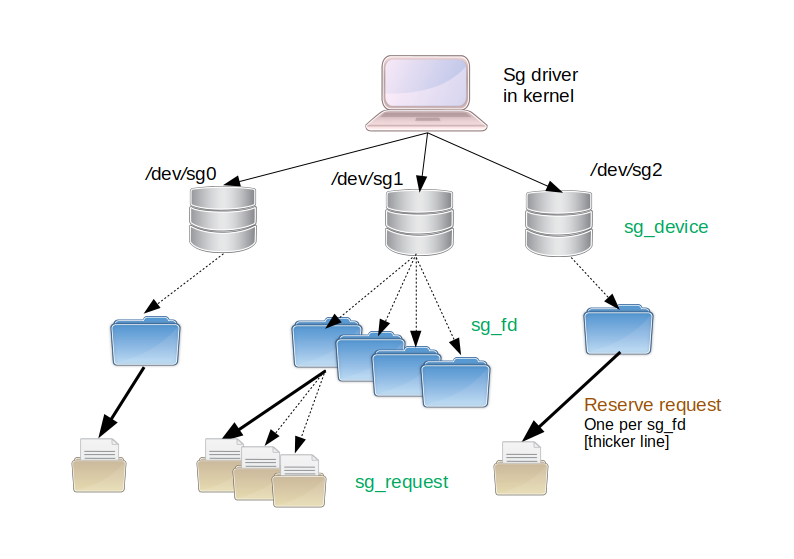
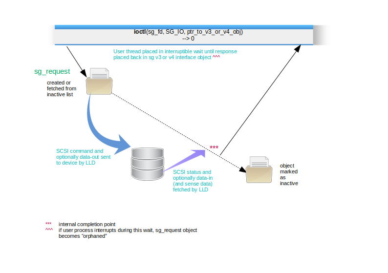
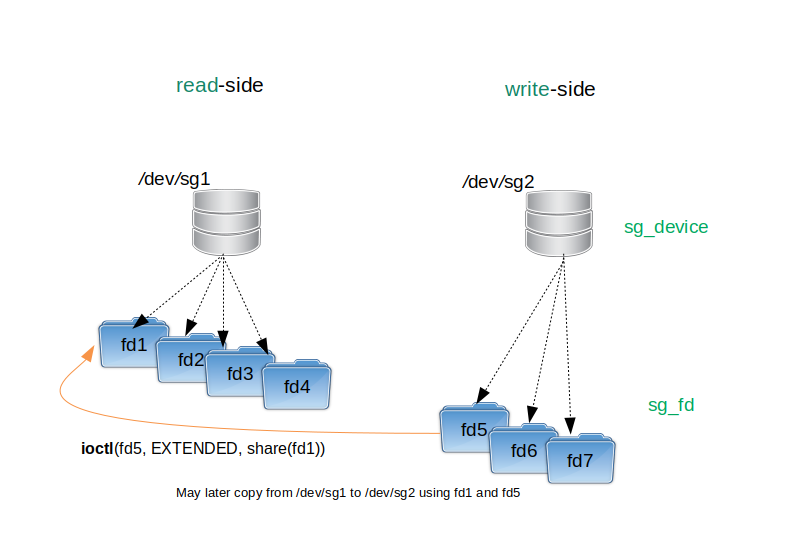
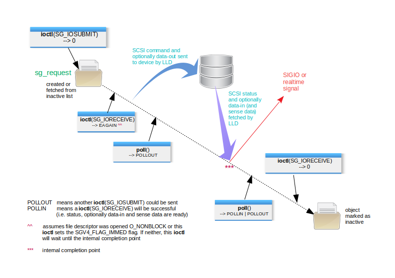
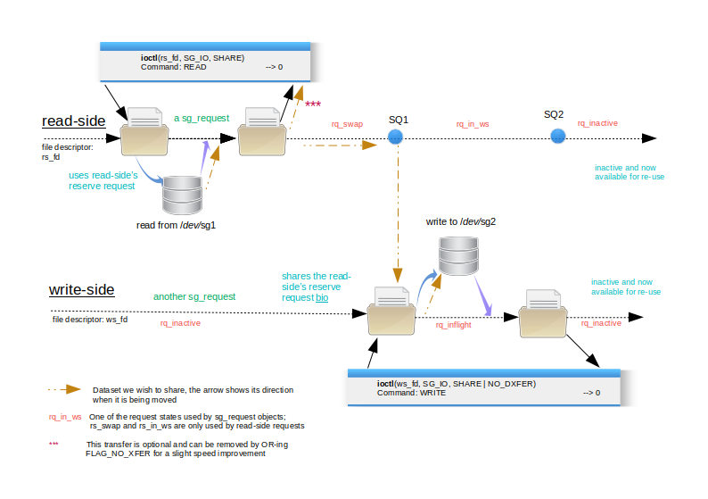
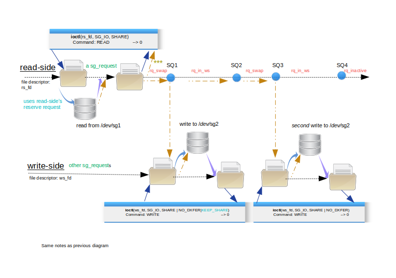
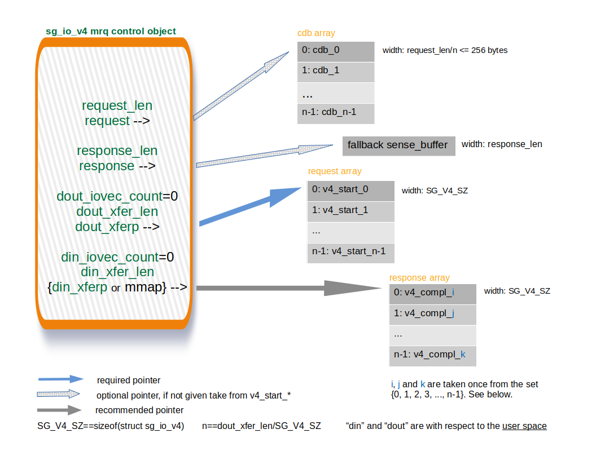
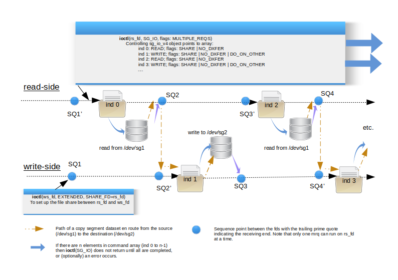

The Linux SG driver version 4.0
2 Changes to sg driver between version 3.5.36 and 4.0
2.1 Deprecated or removed features in version 4.0 compared to earlier version
3 SCSI Generic versions 1, 2, 3 and 4 interfaces
3.1 Comparison of fields in the v4 and v3 interfaces
3.2 Flags in v3 and v4 interfaces
4 Architecture of the sg driver
4.2 Direct, mmap()-ed IO and bio_s
9 Sharing design considerations
10.2 Aborting multiple requests
10.3 Single/multiple (non-)blocking requests
13 Bi-directional command support
The SCSI Generic (sg) driver in Linux passes SCSI commands, optionally with data (known as data-out), to a SCSI device, and receives back from that device: SCSI status, sense data (if the status is "bad") and optionally data (known as data-in). It is the pass-through driver of the Linux SCSI subsystem. The sg driver does not own SCSI devices in the normal fashion in which many OS drivers have exclusive control over a class of devices. In most cases the sg driver shares control of SCSI devices with other SCSI sub-system upper level drivers such as sd (for disks), st (for tape drives), sr (for DVD/CDs) and ses (for SCSI Enclosure Services devices). Some disk array drivers choose to make their (physical) disks visible to the sg driver and not visible to the sd driver; the reason is to disallow direct data access to those disks while allowing tools like smartmontools to monitor the metadata of those disks (e.g. their temperature and endurance/lifetime metrics (for SSDs)).
The sg driver has been present since version 1.0 of the
Linux kernel in 1992. In the 28 years since then the driver has had 3
interfaces to the user space and now a fourth is being added. The
first and second interfaces (v1 and v2) use the same header: 'struct
sg_header' with only v2 now fully supported. The "v3"
interface is based on 'struct sg_io_hdr'. Both these structures are
defined in include/scsi/sg.h the bulk of whose contents will move to
include/uapi/scsi/sg.h as part of this upgrade. Prior to the changes
now proposed, the "v4" interface is only implemented in the
block layer's bsg driver. The Block SCSI Generic (bsg)
driver has been present in Linux for around 15 years . The bsg
driver's user interface is found in include/uapi/linux/bsg.h . These
changes propose adding support for the "v4" interface via
ioctl(SG_IO) for
synchronous use, and the new ioctl(SG_IOSUBMIT)
and ioctl(SG_IORECEIVE)
for asynchronous/non-blocking use. The plan is to deprecate and
finally remove (or severely restrict) the write(2)/read(2)
based asynchronous interface used currently by the v1, v2 and v3
interfaces. The v3 asynchronous interface is supported by the new
SG_IOSUBMIT_V3
and SG_IORECEIVE_V3
ioctl(2)s .
If
the driver changes are accepted, the driver version, which is visible
via an ioctl(SG_GET_VERSION_NUM),
will be bumped from 3.5.36 (in lk 5.9) to 4.0.x . The opportunity is
being taken to clean up the driver after 20 years of piecemeal
patches. Those patches have left the driver with misleading variable
names and comments that don't match the adjacent code. Plus there are
new kernel facilities that the driver can take advantage of. Also of
note is that much or the low level code once in the sg driver (and
remnants remain) have been moved to the block layer and the SCSI
mid-level. This upgrade has been done as a two stage process: first
clean the driver up, remove some restrictions and reinstate some
features that have been accidentally lost. The first stage also adds
basic v4 interface support using the ioctl(SG_IO) for
sync/blocking usage; and ioctl(SG_IOSUBMIT)
and ioctl(SG_IORECEIVE) for
async/non-blocking usage.
Note that the Linux block layer implements the synchronous sg v3 interface via ioctl(SG_IO) on all block devices that use the SCSI subsystem, directly or via translation (e.g. SATA disks use libata which implements the T10 SAT standard; see https://www.t10.org/ ). In pseudocode an example like this: ' ioctl(open("/dev/sdc"), SG_IO, ptr_to_sg_io_hdr)' works as expected. This is not implemented by the sg driver so it is important that the sg driver's implementation of ioctl(SG_IO) remains consistent with other driver implementations (mainly the one found in block/scsi_ioctl.c kernel source code).
A recent first stage patchset (containing 45 patches) was sent to the linux-scsi list on 20210117. Its cover was titled: "[PATCH v13 00/45] sg: add v4 interface". Patch 45 bumps the driver version number to 4.0.12 . The sgv4_20210117 patchset below combines the first and second stage patchsets. Its first stage patchset contains 45 patches. Its second stage patchset adds the new features such as file and request sharing, multiple requests (in one invocation) and supports and the so-called extended ioctl(2). The second patchset is only currently available from this page (as patches 0046 to 0083 applied on top of the first stage). Its second stage bumps the driver version number to 4.0.46 . See Downloads and testing section below.
In keeping with a new Linux kernel coding style directive, the terms master and slave have been replaced by read-side and write side respectively. These terms refer to the two sides of a Request share which is explained in a later section. One aspect lost with this changed terminology is that the read-side is the leader (i.e. comes first) and the write-side is a follower. And usually the write-side is dependent on the read-side succeeding.
The sg driver version number is visible to the user space via ioctl(SG_GET_VERSION_NUM) and in procfs via 'cat /proc/scsi/sg/version'. The version number has been stable at 3.5.36 for the past 5 years, up to and including Linux kernel 5.5.0 . Since the changes proposed in this page are large, they have been divided into two patchsets. The first patchset has been sent to the Linux-scsi development list in many versions during the last months.
The following set of bullet points corresponds to the first patchset:
remove limit of 16 outstanding commands/requests per file descriptor. There is now a single xarray ("extensible array")) per sg file descriptor, with some requests marked as "inactive" which means they are ready for re-use in the future. In the updated driver there can be virtually an unlimited number of outstanding requests per file descriptor. To limit a badly programmed application from consuming all available memory, each request that uses data buffers bumps a byte counter which will reject further requests on that descriptor if a given count is exceeded. That defaults to 16 MiB and that value can be modified via an ioctl(2).
defer freeing of resources (specifically memory) of all request objects on one file descriptor until the last copy (if any) of that file descriptor is closed. This includes waiting for the completion of all associated "inflight" requests. This allows re-use of resources when multiple SCSI commands are sent via the same file descriptor. Associated request block layer and SCSI mid-level objects are freed as soon as practical (same as they were in 3.5.36).
extend the SG_IO ioctl(2) to accept the v4 interface based on struct sg_io_v4 found in <linux/bsg.h>
add SG_IOSUBMIT and SG_IORECEIVE ioctl(2)s for asynchronous (non-blocking) usage with the v4 interface.
add SG_IOSUBMIT_V3 and SG_IORECEIVE_V3 ioctl(2)s for asynchronous (non-blocking) usage with the v3 interface. These are designed to be replacements for the write() and read() system calls which have been used for this purpose in version 1, 2 and 3 of the sg driver.
reinstate the original functionality of the SG_FLAG_NO_DXFER request flag. If given then it will bypass user data copies between the user space and kernel buffers. This flag will not effect the user data transfers (usually DMA) between SCSI devices and kernel buffers controlled by this driver; they still take place. This level of control is needed for the "sharing" request feature discussed below.
add support for blk_poll() and REQ_HIPRI with the SGV4_FLAG_HIPRI
're-purpose' previously unused 8 bytes at end of struct sg_scsi_id for the full SCSI LUN as an array of 8 bytes. Use anonymous union within the structure to avoid breaking existing code.
copy output obtained by 'cat /proc/scsi/sg/debug' to 'cat /sys/kernel/debug/scsi_generic/snapshot'. This is the initial debugfs support. Add snapshot_devs read-write attribute that can be used to limit which sg devices are shown in the snapshot.
add support for iopoll, also known as hipri and blk_poll. Currently both sync and async usage is supported but restrictions may need to be added for async usage. This feature is "new ground" for the SCSI subsystem.
bump the driver version number to 4.0.12
Probably the most important aspect of the first patchset not shown in the above list, is modernizing the driver code. Much of that driver code is over twenty years old and many things have changed in the kernel since then, especially in the area of multi-core machines and the code needed to handle the parallelism that introduces.
The following list of features are added in the second patchset:
add file descriptor sharing in which the user sets up a relationship between two sg driver file descriptors. This is used for two purposes: for request sharing (next bullet) and for allowing multiple requests submitted on a single file descriptor to be able to access another (shared) sg file descriptor.
add request sharing to expedite copying. Large copies can be considered as a sequence of copy segments. Each copy segment is typically a READ from device X followed by a WRITE to device Y of the data just received from device X. Request sharing uses a single, "in-kernel" buffer shared by both the READ and the WRITE. There is an option to copy the READ data into the user space. Rather than copying, the same logic can be used for verifying one segment of data is the same as another segment of data (potentially on another disk). To do a verify, the SCSI WRITE command simply is replaced with the VERIFY command (with its BYTCHK field set to 1).
add an extensible SG_SET_GET_EXTENDED ioctl(2) that takes a fixed size structure (96 byte). Some of that structure is currently not used to allow for later additions. It contains both integer (32 bit) and boolean fields. Multiple actions can be performed with a single call to ioctl( SG_SET_GET_EXTENDED).
add single READ, multiple WRITE capability to the request sharing in the previous bullet. WRITEs may be to different devices (and are done sequentially and use the same in-kernel buffer). The WRITEs may be a subset of the read data and with the SGV4_FLAG_DOUT_OFFSET flag (value in sg_io_v4::spare_in), it may start at any byte offset in the read buffer. Also non data-moving SCSI commands may appear in this sequence. These commands may move data on the storage device, but not between the host computer and the storage device. Examples of potentially useful non data-moving SCSI commands are SYNCHRONIZE CACHE, PRE-FETCH and EXTENDED COPY.
add multiple requests capability (mrq) in a single ioctl(SG_IO) or ioctl(SG_IOSUBMIT) invocation. Can be combined with request sharing. Multiple non-blocking requests can use an ioctl(SG_IOSUBMIT) call for submission while one or more ioctl(SG_IORECEIVE) calls can be used to receive the associated responses. Requests in the request array may use SGV4_FLAG_DO_ON_OTHER to take advantage of file descriptor sharing.
add a SGV4_FLAG_IMMED flag for ioctl(SG_IORECEIVE) or ioctl(|SG_IORECEIVE_V3) [or read(2)] calls. This enables non-blocking mode making it equivalent to setting O_NONBLOCK on the associated file descriptor. May also be used on the control object given for multiple requests to either ioctl(SG_IOSUBMIT) or ioctl(SG_IORECEIVE).
add SGV4_FLAG_NO_WAITQ flag to skip using the wait queue. The poll(2) system command will not report such a request, but ioctl(SG_GET_NUM_WAITING) will. Signals, if armed, will still be produced.
add bi-directional support with the sg V4 interface; async bidi uses new ioctl(2)s: SG_IOSUBMIT and SG_IORECEIVE, while sync bidi uses ioctl(SG_IO). Unfortunately bidi SCSI command support has been removed from the Linux kernel in lk 5.1 so it has been removed from this driver to allow it to merge post lk 5.1 . It is still available as a patch on this driver when in kernels prior to that support being removed.
use ioctl(SG_SET_GET_EXTENDED) to yield information that was previously "hidden" from the user space. For example return the sg device minor number (e.g. the "3" in /dev/sg3) of the sg device that owns the file descriptor the ioctl(2) is called on.
ioctl(SG_SET_GET_EXTENDED) can be used to change the segment size of scatter gather lists. In the v3 driver the segment size is fixed at 32 KB
add ioctl(SG_IOABORT) to abort an inflight command/request using its pack-id or tag. Also allow a single call to abort all inflight and un-submitted requests associated wit a multiple requests invocation.
add logic for tag handling and keep existing pack_id (packet id) logic which plays a similar role
the shared variable blocking (svb) method of the multiple requests capability (mrq) is designed for large copy (and copy-like such as verify/compare) operations. While blocking the invoking user thread, it can issue a fixed number of READ commands (currently up to 8) asynchronously and as each read completes, its dependent WRITE command(s) is issued. There is a flag (SGV4_FLAG_ORDERED_WR) for additionally making sure that those WRITEs are issued in the same order as their READs, important when the destination of a copy is a ZBC (shingled) disk
add support to pass a file descriptor generated by eventfd(2) to the driver via an ioctl(2). Another ioctl(2) can be used to remove the relationship between an eventfd and a sg file descriptor; this is optional and is needed, for example, if the user wants to associate a different eventfd to a sg file descriptor. Requests that have the SGV4_FLAG_EVENTFD in their flags increment the internal count maintained by the eventfd mechanism when that request reaches its internal completion point. See Figures 2 and 4.
while the order of responses (i.e. completions) picked up by a mrq ioctl(SG_IORECEIVE) can vary, the user can control where those responses are placed in response array. The user can also give a maximum number of responses that a mrq ioctl(SG_IORECEIVE) can receive.
bump the driver version number to 4.0.46
There are still some things to do:
allow some task management functions to be sent (when v4 interface's subprotocol field is 1)
extend debugfs support.
Again these points are given in bullet form and overlap somewhat:
warn (once per kernel run in the log) that the sg version 1 and version 2 interfaces are deprecated. Apart from version 3 and version 4 being better options, the version 1 and version 2 interfaces rely solely on the write(2) and read(2) system calls sending a mix of user data and metadata which is frowned upon by security folks
deprecate the use of the write(2) and read(2) system calls in the version 3 interface. Again with a warning message once per kernel run in the log. Using this driver upgrade supply ioctl(SG_IOSUBMIT_V3) and ioctl(SG_IORECEIVE_V3) as "drop in" replacements.
deprecate the use of 'echo 1 > /proc/scsi/sg/allow_dio' as a prelude to doing direct IO with this driver. Indirect IO remains the default and the driver continues to require the SG_FLAG_DIRECT_IO flag on each request that the user wants to use direct IO.
More to follow ....
SCSI and other storage related command sets send a lot of data to storage devices and receive as much if not more data back from those devices. That data can be subdivided into metadata and user data. The SCSI metadata sent to the storage device is the command which is sometimes referred to as the cdb (command descriptor block). The metadata received back from the device is a SCSI status byte and optionally a sense buffer of 18 or more bytes. More generic terms for those transfers are the request and the associated response. User data sent to the storage device is termed as data-out and user data received from the device is called data-in. These two terms are sometimes shorted to "dout" and "din". A few SCSI commands have both data-out and data-in transfers and are referred to as bi-directional (or bidi) while the majority of SCSI commands send user data either out or in, or transfer no user data. The SCSI commands sets define where user data will be placed in, or fetched from, the storage device but leave the details of where (and how) that user data is placed in the initiator (i.e. at the computer or local end) to the transport. Examples of transports are: iSCSI, SAS, SATA, FCP, SRP (Infiniband) and USB (UASP).
Another aspect of a SCSI pass-through is whether to map the sending of a request and receiving of the associated response onto a single system call or divide it into two parts. The single system call approach is termed here as blocking or synchronous. The two part approach is termed as non-blocking or asynchronous. Both approaches typically have an associated timeout. It is assumed that any user data transfer associated with the command will have taken place before a successful response is sent by the storage device. As a general rule the blocking approach is simpler to program while the non-blocking approach is more flexible, allowing code to do other chores while waiting for SCSI commands to complete.
Traditionally character device drivers in Unix have had a open(2), close(2), read(2), write(2), ioctl(2) interface to the user space. As well as those system calls this driver supports mmap(2), poll(2) and fasync(). The fasync() driver call is related to the fcntl(2) system call in which the file descriptor flags may be changed to add O_AYSNC (e.g. fcntl(SET_FL(flags | O_ASYNC)) ) . When considering how to send SCSI commands and associated data to a pass-through driver such as sg, it soon becomes evident that a structure will be needed to hold all the components. This is the same approach used by other operating systems that offer a SCSI pass-through interface. And in the almost 30 years that Linux has been in existence, it has had three (and a half) such structures.
The sg driver was present in Linux kernel 1.0.0 released in 1992. It supported just two ioctl(2)s at the time: SG_SET_TIMEOUT and SG_GET_TIMEOUT plus some "pass-through" ioctl(2)s that started with "SCSI_IOCTL_" that were in common with other ULDs (e.g. sd and st drivers) and implemented by the Linux SCSI mid-level. The only method of sending a SCSI command by this driver was with the async write(2) and read(2) system calls (that neglects counting the synchronous "pass-through" pass-through ioctl(2): SCSI_IOCTL_SEND_COMMAND implemented by the SCSI mid-level).
The version 1 SCSI pass-through interface only supported the asynchronous approach. This is its interface structure found in Linux kernel 1.0.0 (1992):
struct sg_header
{
int pack_len; /* length of incoming packet <4096 (including header) */
int reply_len; /* maximum length <4096 of expected reply */
int pack_id; /* id number of packet */
int result; /* 0==ok, otherwise refer to errno codes */
/* command follows then data for command */
};Only the pack_id field is found in all versions of the sg driver interface and its semantics remain the same. However there is an issue with the pack_id and the read(2) system call: pack_id is out-going data (to the driver in this case) while the rest of the data in that structure (with possibly the data-in from the storage device tacked onto the end) is in-coming data. This bidirectional data flow is abnormal for a read(2) system call which normally only expects in-coming data. It is of note that in the version 4 driver the new ioctl(2) to replace read(2) is ioctl(SG_IORECEIVE) and it is defined with the __IOWR() macro indicating both a write (from the user space) and a read (into the user space) data transfer.
The version 2 SCSI pass-through interface structure is really just a small extension of version 1:
struct sg_header {
int pack_len; /* [o] reply_len (ie useless), ignored as input */
int reply_len; /* [i] max length of expected reply (inc. sg_header) */
int pack_id; /* [io] id number of packet (use ints >= 0) */
int result; /* [o] 0==ok, else (+ve) Unix errno (best ignored) */
unsigned int twelve_byte:1;
/* [i] Force 12 byte command length for group 6 & 7 commands */
unsigned int target_status:5; /* [o] scsi status from target */
unsigned int host_status:8; /* [o] host status (see "DID" codes) */
unsigned int driver_status:8; /* [o] driver status+suggestion */
unsigned int other_flags:10; /* unused */
unsigned char sense_buffer[SG_MAX_SENSE];
};There are various shortcoming of the version 2 (and hence version 1) interface structure: the command (cdb), data-in, and/or data-out were tacked onto the end of the interface structure. The command length was not given explicitly but derived from the cdb making it difficult to support vendor specific commands.
Since many of the field and constant names are the same or related between the version 3 interface, the version 4 interface and the control object use of the version 4 interface, three colours are used to distinguish what is being referred to:
blue: associated with the version 3 interface
violet: associated with the version 4 interface and, in the case of a multiple requests (mrq) invocation, associated with each element in the request (and response ) array
dark green: associated with the control object of a multiple requests (mrq) invocation
In some cases a field name is in two colours (two tone) to indicate it applies to two of the above. Since very little reference is made to the version 2 and version 1 interface fields, those names are in the default text colour. The term flag (and as a verb) is used often in a generic sense in which case it is not coloured; the same applies to several other field names (e.g. timeout and duration).
The version 3 SCSI pass-through interface structure was introduced around 2000 and was a departure from versions 1 and 2:
typedef struct sg_io_hdr {
int interface_id; /* [i] 'S' for SCSI generic (required) */
int dxfer_direction; /* [i] data transfer direction */
unsigned char cmd_len; /* [i] SCSI command length */
unsigned char mx_sb_len;/* [i] max length to write to sbp */
unsigned short iovec_count; /* [i] 0 implies no sgat list */
unsigned int dxfer_len; /* [i] byte count of data transfer */
/* dxferp points to data transfer memory or scatter gather list */
void __user *dxferp; /* [i], [device -> *i or *i -> device] */
unsigned char __user *cmdp;/* [i], [*i] points to command to perform */
void __user *sbp; /* [i], [*o] points to sense_buffer memory */
unsigned int timeout; /* [i] MAX_UINT->no timeout (unit: millisec) */
unsigned int flags; /* [i] 0 -> default, see SG_FLAG... */
int pack_id; /* [i->o] unused internally (normally) */
void __user *usr_ptr; /* [i->o] unused internally */
unsigned char status; /* [o] scsi status */
unsigned char masked_status;/* [o] shifted, masked scsi status */
unsigned char msg_status;/* [o] messaging level data (optional) */
unsigned char sb_len_wr; /* [o] byte count actually written to sbp */
unsigned short host_status; /* [o] errors from host adapter */
unsigned short driver_status;/* [o] errors from software driver */
int resid; /* [o] dxfer_len - actual_transferred */
/* unit may be nanoseconds after SG_SET_GET_EXTENDED ioctl use */
unsigned int duration; /* [o] time taken by cmd (unit: millisec) */
unsigned int info; /* [o] auxiliary information */
} sg_io_hdr_t;Unused fields should be set to zero on input. It is recommended that the whole sg v3 structure is zeroed (e.g. with memset()) prior to a command request being built and submitted. Note that one of the constants: SG_DXFER_NONE, SG_DXFER_TO_DEV or SG_DXFER_FROM_DEV should be placed in the dxfer_direction field and they all have negative values (-1, -2 and -3 respectively). This is used to differentiate between the v1/v2 interface (which has reply_len in that position) and this (v3) interface.
The version 3 sg driver supported the version 1, 2 and 3 interface structures. It introduced the blocking ioctl(SG_IO) while keeping the write(2)/read(2) technique for asynchronous usage. The blocking ioctl(SG_IO) has also been implemented in the block layer for SCSI block devices (e.g. /dev/sdb) and in other drivers such as the SCSI tape driver (st). So at this time the version 3 interface structure together with ioctl(SG_IO) is the most used SCSI pass-through in Linux. Over time there has been a transfer of functionality from the write(2) and read(2) system calls to various ioctl(2)s. Using the write(2) and read(2) system calls in the way that this driver does is frowned upon by the Linux kernel architects. Even though adding new ioctl(2)s is also discouraged, two new ioctl(2)s were proposed in this post by Linux architect (L. Torvalds). Those two ioctl(2)s plus two closely related ioctl(2)s have been implemented in this upgrade.
Some weaknesses of the version 3 interface were that it had no provision for bidirectional commands and that it included pointers. Pointers in interface structures are problematic because they change size when moving from 32 bit to 64 bit architectures (and that was a big issue at the time). Also the version 3 interface was too SCSI command set specific and could not easily pass related protocols such as SCSI task management functions (TMFs) or the SAS Management Protocol (SMP). So around 2005 the version 4 SCSI pass-through interface structure was introduced:
struct sg_io_v4 {
__s32 guard; /* [i] 'Q' to differentiate from v3 */
__u32 protocol; /* [i] 0 -> SCSI , .... */
__u32 subprotocol; /* [i] 0 -> SCSI command, 1 -> SCSI task
management function, .... */
__u32 request_len; /* [i] in bytes */
__u64 request; /* [i], [*i] {SCSI: cdb} */
__u64 request_tag; /* [i] See Table 1 entry */
__u32 request_attr; /* [i] {SCSI: task attribute} */
__u32 request_priority; /* [i] {SCSI: task priority} */
__u32 request_extra; /* [i->o] See Table 1 entry */
__u32 max_response_len; /* [i] in bytes */
__u64 response; /* [i], [*o] {SCSI: (auto)sense data} */
/* "dout_": data out (to device); "din_": data in (from device) */
__u32 dout_iovec_count; /* [i] 0 -> "flat" dout transfer else
dout_xfer points to array of iovec */
__u32 dout_xfer_len; /* [i] bytes to be transferred to device */
__u32 din_iovec_count; /* [i] 0 -> "flat" din transfer */
__u32 din_xfer_len; /* [i] bytes to be transferred from device */
__u64 dout_xferp; /* [i], [*i -> device] */
__u64 din_xferp; /* [i], [device -> *i] */
__u32 timeout; /* [i] units: millisecond */
__u32 flags; /* [i] bit mask. See Table 1 entry and Table 2 */
__u64 usr_ptr; /* [i->o] unused internally */
__u32 spare_in; /* [i] See Table 1 entry */
__u32 driver_status; /* [o] 0 means ok */
__u32 transport_status; /* [o] 0 means ok */
__u32 device_status; /* [o] {SCSI: command completion status} */
__u32 retry_delay; /* [o] {SCSI: status auxiliary information} */
__u32 info; /* [o] See Table 1 entry and Table 3 */
__u32 duration; /* [o] time to complete, in milliseconds (or nanoseconds) */
__u32 response_len; /* [o] bytes of response actually written */
__s32 din_resid; /* [o] din_xfer_len - actual_din_xfer_len */
__s32 dout_resid; /* [o] dout_xfer_len - actual_dout_xfer_len */
__u64 generated_tag; /* [o] see Table 1 entry */
__u32 spare_out; /* [o] zero placed in this field */
__u32 padding;
};Again, unused fields should be set to zero on input. The __s32 and __u64 types could be replaced by the (more) standard int32_t and uint64_t C types. The pointers are still there but are placed in fixed length (64 bit) unsigned integers. All the other integer sizes are fixed so that the structure is the same size on 32 and 64 bit architectures. Between around 2005 and this upgrade, the version 4 interface structure was only used by the bsg driver which explains why its interface structure is found in the <linux/bsg.h> header file. The version 2 and version 3 interface structures are found in the <scsi/sg.h> header file.
The following table has a row for each field in the version 4 interface structure. In the second column is the corresponding field name from the version 3 interface structure. A field name in brackets implies a close, but not exact match, see the notes in the third column. No entry in the second column implies there is not matching field in the version 3 interface structure.
v4 interface field |
corresponding to in v3 interface |
Notes |
|---|---|---|
guard [io] |
[interface_id] |
Both fields are the first in their respective structures and are assumed to be 32 bits each. The guard for v4 is an ASCII 'Q' stored as an unsigned 32 bit integer. The interface_id is an ASCII 'S' stored as a 32 bit integer. The difference between signed and unsigned is not important in this case. |
protocol [io] |
|
A value of '0' (a 32 bit integer) is used for all SCSI protocols |
subprotocol [io] |
|
A value of '0' for SCSI commands sets based on SPC. The value '1' is reserved for SCSI Task Management Functions [TMFs] which are not implemented at this time. |
request_len [i] |
cmd_len |
Number of bytes in SCSI command. Since cmd_len is an unsigned char (i.e. an 8 bit byte) the largest number it can represent is 255 in the v3 interface. |
request [i, *o] |
cmdp |
Like all pointers in the v4 interface, request is a pointer value placed in a 64 bit unsigned integer. This is done to make the size of v4 interface constant (as long as pointers (by C definition able to fit in unsigned long) fit in 64 bits). Conversely, cmdp is a pointer so its size will very between 32 and 64 bit systems. |
request_tag [i] |
|
Used if ioctl(SG_SET_FORCE_PACK_ID) third argument points to non-zero integer and SG_CTL_FLAGM_TAG_FOR_PACK_ID is set via the extended ioctl(2) on this file descriptor. This value is acted upon by ioctl(SG_IORECEIVE) and ioctl(SG_IOABORT). The generated_tag is only written when ioctl(SG_IOSUBMIT) completes. So the user space code needs to copy the contents of generated_tag to this field to match by that tag value in a call to ioctl(SG_IORECEIVE). |
request_attr [i] |
|
not currently used |
request_priority [i] |
|
when the SGV4_FLAG_REC_ORDER flag is set then the value in this field on submission is held with the request internally. If after completion this request is read using ioctl(SG_IORECEIVE) with the SGV4_FLAG_MULTIPLE_REQS flag set then the value is used as an index into the response array to place its response. |
request_extra [io] |
pack_id |
A packet identifier of -1 is taken as a wildcard (i.e. match any). Twos complement is assumed for the 32 bit unsigned request_extra so -1 becomes 0xffffFFFF . Also used by ioctl(SG_IOABORT) for identification. In the v3 interface the submitted pack_id is placed in the async completion object. In the v4 interface the submitted request_extra is placed in the async completion object. Both of these fields only change the behaviour of a request if ioctl(SG_SET_FORCE_PACK_ID) is active, otherwise they are just carried through to the completion object which is useful (along with usr_ptr) in async usage. |
max_response_len [i] |
mx_sb_len |
No more than this number of sense bytes will be written out starting at where response points. |
response [i, {*i},o] |
sbp |
A pointer to the sense buffer. Only used when the SCSI device yields sense data for the associated command. In the non-blocking case, the pointer value given to ioctl(SG_IOSUBMIT) is used and any value given to ioctl(SG_IORECEIVE) is ignored and when that ioctl(2) returns this field will contain the original value in it. The note given for request applies here also. |
dout_iovec_count [i] |
[iovec_count] |
If this field is zero then dout_xferp (or dxferp) points to user data to be written from the host to the storage device. If this field is non-zero, then it's the number of elements in the scatter gather list pointed to by dout_xferp (or dxferp). Kernels around lk 5.10 limit this value to UIO_MAXIOV which is 1024. |
dout_xfer_len [io] |
[dxfer_len] |
This field is the number of bytes pointed to by dout_xferp (or dxferp). The data is (or will be) moved from the host to the SCSI device (e.g. a SCSI WRITE command) |
din_iovec_count [i] |
[iovec_count] |
If this field is zero then din_xferp (or dxferp) points to user data to be written from the host to the storage device. If this field is non-zero, then it's the number of elements in the scatter gather list pointed to by din_xferp (or dxferp). Kernels around lk 5.10 limit this value to UIO_MAXIOV which is 1024. |
din_xfer_len [io] |
[dxfer_len] |
This field is the number of bytes pointed to by din_xferp (or dxferp). The data is (or will be) moved from the SCSI device to the host (e.g. a SCSI READ command). |
dout_xferp [i, *o] |
[dxferp] |
If the dout_iovec_count field is zero then this field points to the first byte to be transferred from the user space memory to the storage device. All the other bytes (indicated by dout_xfer_len) should follow the first byte with no gaps. If the dout_iovec_count field is non-zero then this field points to a scatter gather list which the driver will use to output data from the user space to the storage device. The note given for request applies here also. |
din_xferp [i, *i] |
[dxferp] |
If the din_iovec_count field is zero then this field points to the first byte to be transferred from the storage device to the user space memory. All the other bytes (indicated by din_xfer_len) should follow the first byte with no gaps. If the din_iovec_count field is non-zero then this field points to a scatter gather list which the driver will use to read data from the storage device to the user space. The note given for request applies here also. |
timeout [i] |
timeout |
This is the number of milliseconds the SCSI mid level will wait for a command to finish before it attempts to abort that command. If zero is given, a driver default of SG_DEFAULT_TIMEOUT (60,000 or 60 seconds) is chosen. Several SCSI commands (e.g. FORMAT UNIT with the IMMED bit cleared on a 10 Terabyte disk (hard disk or SSD)) take a lot longer than that. User manuals for disks often indicate how long such commands will take. |
flags [io] |
flags |
This is a 32 bit integer in which the lower numbered bit positions are boolean flags. The available settings are listed in the <include/uapi/scsi/sg.h> header file. They start with SG_FLAG_ or SGV4_FLAG_ . See Table 2 below. The two tone flags field indicates either the v3 flags field or the v4 flags field. |
usr_ptr [io] |
usr_ptr |
The driver does not use this value. Whatever pointer value that is placed in usr_ptr will be sent back to the user space after the command has completed. This may be useful in async (non-blocking) code when the submission and completion are separated (e.g. in different threads). Whenever multiple submissions are outstanding, the order of completion is up to the storage device. The note given for request applies here also. |
spare_in [i] |
|
when the SGV4_FLAG_DOUT_OFFSET flag is set, this field holds the data-out (dout) byte offset. It is mainly used on the write-side (typically a WRITE command) of a share request. This byte offset is applied to the in-kernel buffer from the preceding read-side command and the copy (DMA) out to the write-side device will be dout_xfer_len bytes long. If this offset plus dout_xfer_len will exceed the in-kernel buffer size then the request will fail with an errno of E2BIG. |
driver_status [o] |
driver_status |
This value is output by the driver. Zero indicates no errors. These are not so much sg driver errors as errors from the SCSI mid-level. The possible values are listed in the <include/scsi/scsi.h> header and they start with DRIVER_ . If driver_status is non-zero then SG_INFO_CHECK is set in the info field. |
transport_status [o] |
host_status |
This value is output by the driver. Zero indicates no errors. These are not so much sg driver errors as errors from a SCSI Low Level Driver (LLD) typically controlling a Host Bus Adapter (HBA). The possible values are listed in the <include/scsi/scsi.h> header and they start with DID_ . If transport_status is non-zero then SG_INFO_CHECK is set in the info field. |
device_status [o] |
status |
This value is output by the driver. Zero indicates no errors. This is the 8 bit SCSI Status returned in response to all SCSI commands (unless they time out). The possible values are listed in the <include/scsi/scsi_proto.h> header and they start with SAM_STAT_ . The SCSI status SAM_STAT_CONDITION_MET is non-zero but is not an error; any other non-zero value is an error and will cause SG_INFO_CHECK to be set in the info field. |
retry_delay [o] |
|
not currently used. Zero is output by the driver in this field. |
info [o] |
info |
This value is output by the driver. This value contains boolean flags OR-ed together. The possible flags are listed in the <include/uapi/scsi/sg.h> and they start with SG_INFO_ . See Table 3. |
duration [o] |
duration |
This value is output by the driver. It is the time between when a command is issued to the block layer until the internal completion point occurs. By default the unit is milliseconds, however if SG_CTL_FLAGM_TIME_IN_NS is set in the extended ioctl(2) on this file descriptor then the unit is nanoseconds. |
response_len [o] |
sb_len_wr |
This value is output by the driver. This is the length of the sense buffer (i.e. the response) that is returned from the storage device. This usually indicates something has gone wrong with the command. A value of 0 indicates there is no sense buffer and the storage device has most likely successfully completed the command. Due to caches in storage devices WRITEs may initially report success and later report a "deferred error". If response_len is greater than zero then SG_INFO_CHECK is set in the info field. |
din_resid [o] |
resid |
This value is output by the driver. The value is din_xfer_len less the number of bytes actually transferred in from the storage device. |
dout_resid [o] |
|
This value is output by the driver. The value is dout_xfer_len less the number of bytes actually transferred out to the storage device. |
generated_tag [o ***] |
|
This value is output by the driver. Zero will be placed in this field unless the SGV4_FLAG_YIELD_TAG flag is one of the flags set in the flags field in a call to ioctl(SG_IOSUBMIT). In this case, the block layer's tag value is placed there. |
spare_out [o] |
|
Zero is placed in this field except for the control object of multiple requests (see below). |
Table 1: sg v4 interface structure compared with v3
Unused fields should be set to zero on input. It is recommended that the whole sg_io_v4 structure is zeroed (e.g. with memset() ) prior to a command request being built and submitted. In the first column of the above table, the "i" and "o" indications within the square brackets are in some cases expansions on what is shown in the sg_io_v4 structure definition comments above the table. Those with "i" should be set (or left as zero) before a call to ioctl(SG_IO) or ioctl(SG_IOSUBMIT), Those with "o" will in some cases be set by this driver and can be checked after a call to ioctl(SG_IO) or ioctl(SG_IORECEIVE). The "*o" indicates a pointer being used as the source starting address to copy data from the user space to the driver and often on to a storage device. The "*i" indicates a pointer being used as the destination starting address to copy data from a storage device into the user space. This level of detail becomes more important when a request is split between a ioctl(SG_IOSUBMIT) and a ioctl(SG_IORECEIVE). Some input values (e.g. din_xfer_len) are copied to the output as a convenience (e.g. to help in this calculation: (din_xfer_len - din_resid) which is the number of bytes actually read). The "[o ***]" indication notes the special case of generated_tag whose value is output after ioctl(SG_IOSUBMIT), all other output values (and generated_tag itself) are output after ioctl(SG_IORECEIVE) has completed.
The square brackets in the second column of the above table implies the v3 interface field is similar to, but not exactly the same as, the v4 interface field.
Note that multiple requests (in one invocation) use an instance of the same sg_io_v4 structure as its control object. Most fields have a different, but related, meaning when they are in a control object. A control object is distinguished by having the SGV4_FLAG_MULTIPLE_REQS flag set. Multiple requests are described in a later section.
The following table lists the flag values that can be OR-ed together and placed in the flags field. The are listed in numerical order of their values (shown in hex within square brackets). Where two names map to the same value, the preferred name is in boldface. The older flags (i.e. inherited from the version 3 driver) tend to have lower values.
Flag name [hex_value] |
Description |
|---|---|
SG_FLAG_DIRECT_IO [0x1] SGV4_FLAG_DIRECT_IO |
The default action of this driver is to "bounce" data through kernel buffers en route to or from the user space. This is sometimes referred to as "indirect" IO. This is obviously inefficient but is very flexible. Among other reasons, memory in a user space needs to be "pinned" during a direct IO data transfer because a user space process can be killed at any time (e.g. by a superuser or the OOM killer) seen from the driver's perspective. Another issue with direct IO is that the user space buffer must meet whatever alignment requirements the storage HBA imposes. Most alignment problems can avoided by the user allocating buffers with memalign(_SC_PAGESIZE, num_blks * lbs) where lbs is the logical block size (in bytes) of the storage device. |
SG_FLAG_UNUSED_LUN_INHIBIT [0x2] |
Ignored. This is a remnant from SCSI-2 in which bits 7, 6 and 5 of byte 1 of many cdb_s carried the 3 bit LUN value. If SCSI 2 equipment is being used, the cdb can be altered explicitly to carry the LUN address. |
SG_FLAG_MMAP_IO [0x4] SGV4_FLAG_MMAP_IO |
This is another "direct" IO capability in which the user space buffers are obtained by mmap(2) system calls. The driver arranges for user data to be transferred directly between the user space and the storage device. Since the driver provides the buffer pointer returned by mmap(2), then it is guaranteed to meet any alignment (and page pinning) requirements. This flag cannot be given with SGV4_FLAG_DIRECT_IO as they are basically different ways of doing the same thing. Note that request sharing is a faster way of doing a disk-to-disk copy compared to using this flag for several reasons, one being that with this flag two "mmap-ed" buffers must be used (for the source and destination of the copy) and the user code must copy the data between those two buffers. See section on mmap below. |
SGV4_FLAG_YIELD_TAG [0x8] |
This flag may be used with ioctl(SG_IOSUBMIT). If that ioctl(2) does not return an error then a tag value will be placed in the generated_tag field of the object pointed to by the ioctl's third argument. If the tag value (obtained from the block subsystem) is not available then -1 (or 0xffffFFFF) is placed in the generated_tag field. |
SG_FLAG_Q_AT_TAIL [0x10] SGV4_FLAG_Q_AT_TAIL |
This will place the current request/command at the tail (end) of the block system's queue of commands for the current device. For historical reasons, the driver default is to place the current request/command at the head (start) of the block system's queue. One rationale for this as that admin commands (e.g. INQUIRY and MODE SELECT) show take precedence over normal (data moving) commands. The driver default can first be overridden on a per file descriptor basis with the extended ioctl(SG_CTL_FLAGM_Q_TAIL). Then the per device setting can be overridden on a per request/command setting with this or the following flag. |
SG_FLAG_Q_AT_HEAD [0x20] SGV4_FLAG_Q_AT_HEAD |
This will place the current request/command at the head (start) of the block system's queue of commands for the current device. See the SGV4_FLAG_Q_AT_TAIL flag for more details. |
SGV4_FLAG_NO_WAITQ [0x40] |
With this flag, the internal completion point of a request does not invoke wake_up() on the file descriptor's wait_queue (hence this flag's name). This means that it is pointless waiting for this request's completion using standard Linux system calls. These include the poll(2) and select(2) system commands; the same applies to the epoll(7) mechanism since they all rely on the wait_queue. So the user space is restricted to using sg driver facilities: ioctl(SG_GET_NUM_WAITING), ioctl(SG_GET_PACK_ID) and ioctl(SG_IORECEIVE) with the SGV4_FLAG_IMMED flag set. When SGV4_FLAG_HIPRI is used there is no need to use this flag as it is implied. For async usage this flag should cause the application to "poll" with ioctl(SG_GET_NUM_WAITING) for completion. |
SGV4_FLAG_DOUT_OFFSET [0x80] |
this flag is only active with the v4 interface and reads the "dout" (typically a WRITE command) byte offset from sg_io_v4::spare_in . The request with this flag is assumed to be the write-side request (e.g. a WRITE command) following a read-side request that has populated an in-kernel buffer maintained by the driver. That byte offset will become the starting address within that in-kernel buffer for the DMA out to the write-side device. |
SGV4_FLAG_COMPLETE_B4 [0x100] ^^ |
This flag is only permitted within an array of requests given with a multiple request invocation (mrq). It instructs the driver to wait for the completion of the current request before ("B4") submitting the next request in the array of requests. |
SGV4_FLAG_SIGNAL [0x200] ^^ |
For v3 headers, this flag is ignored. For version 4 this flag is only permitted within an array of requests given with a multiple request invocation. |
SGV4_FLAG_IMMED [0x400] |
This flag uses "IMMED" in the same fashion as various SCSI commands (e.g. FORMAT UNIT) do, where it means: check the request and if it is good, start whatever and then return as promptly as possible. The significant part here is that it doesn't wait for whatever to complete. It can be used with the version 3 and 4 interfaces, including the mrq control object. |
SGV4_FLAG_HIPRI [0x800] |
The associated request will have REQ_HIPRI set when issued to the block layer. The completion handling will use blk_poll() instead of waiting for an event or classic polling (i.e. via the Unix poll(2) or Linux epoll(2) system calls). See the section on iopoll/blkpoll below. |
SGV4_FLAG_STOP_IF [0x1000] |
This flag is only permitted in the control object with some methods of multiple request invocation. Basically if an internal completion point reports an error then further submissions will not occur. All submissions prior to the one with the detected error will be processed as normal and that may require action by the user space code. In the response array, all requests that have been processed at the internal completion point have SG_INFO_MRQ_FINI OR-ed into their info field |
SGV4_FLAG_DEV_SCOPE [0x2000] |
this flag is currently only used by ioctl(SG_IOABORT). Without this flag that ioctl(2) will only look at the given file descriptor for a match on pack_id or tag. In practice a request may need to be aborted when a call like ioctl(SG_IO) takes an unreasonable amount of time to finish, suggesting that something is wrong. Often the file descriptor associated with the ioctl(SG_IO) is locked up in a process that is not responding. When this flag is given, after the ioctl(SG_IOABORT)'s own file descriptor is checked first and if no match is found, then all other sg file descriptors belonging to the same sg device (hence "device scope") are checked and the first request found matching the given pack_id or tag is aborted. Also has the same action with a mrq abort. Use with care. |
SGV4_FLAG_SHARE [0x4000] |
This flag indicates request sharing. Such requests usually occur in pairs. It can only be used with a file descriptor which is either the read-side, or the write-side of a file share which has already been set up. If it is the read-side then the command must be a READ or READ-like SCSI command (i.e. gets data-in from the storage device). If it is the write-side then the command must be a WRITE or WRITE-like SCSI command (i.e. sends data-out to the storage device). |
SGV4_FLAG_DO_ON_OTHER 0x8000 ^^ |
This flag is only permitted within an array of requests given with a mrq invocation. |
SG_FLAG_NO_DXFER [0x10000] SGV4_FLAG_NO_DXFER |
With indirect IO, data is "bounced" through a kernel buffer as it passes from user space memory to the storage device (or vice versa). This flag instructs the driver not to do the portion of the copy between the kernel buffers and user memory. There are several cases where this is useful. It is used on WRITE side of request sharing because the data to be written is already sitting in that kernel buffer (placed there by the preceding READ). Another case is when data is mirrored on two disks, it only needs to be actually read back from one of the disks, but it may be a good idea to read it back from the other disk at the same time to see if a MEDIUM ERROR is reported (which would indicate the mirror is no longer safe). If the data is not going to be compared, then the second READ could use this flag. |
SGV4_FLAG_KEEP_SHARE [0x20000] |
the default action of this driver is to "free up" a reserve request buffer after the write-side request (typically a WRITE command) in a read-write request share. When this flag is applied to a write-side request, than it can be followed by another write-side request which will use the same in-kernel buffer from the preceding read-side request. The last write-side request (e.g. in a READ-WRITE-WRITE-WRITE sequence) should not have this flag set. The last request in a multiple request array must not have this flag set (or an -ERANGE error will result). |
SGV4_FLAG_MULTIPLE_REQS [0x40000] |
This flag can only be used on a sg v4 interface object and indicates that this object is a control object for multiple requests (mrq). |
SGV4_FLAG_EVENTFD [0x80000] |
Assuming the eventfd has been set up on this file descriptor, then at the completion of the associated request that eventfd is signalled. This increments the internal count that can be accessed with read(eventfd, buff, 8). See ioctl(sg_fd, SG_SET_GET_EXTENDED( SG_SEIM_EVENTFD), ...) below, for how the user space passes an eventfd to this driver. |
SGV4_FLAG_ORDERED_WR [0x100000] |
Only used by shared variable blocking method. Requires that write-side commands are issued in the same order as the read-side commands they are paired with. Read-side commands are issued in the order they appear in the command array which is supplied by the user. |
SGV4_FLAG_REC_ORDER [0x200000] |
This flag can be used either on a control object or a normal sg v4 object (hence the two colours). Allows the order in the response array to be specified. There is a later subsection on the use of this flag. |
Table 2: The flags field in the v3 and v4 interface structures
The constants marked with "^^" can only be used within the request array given to a multiple requests (mrq) invocation. Further, those constants ending with "_ON_OTHER" are only valid if a file share has already be set up which contains the file descriptor in the first argument of the ioctl(2). The flags field is always an input to the driver; the corresponding field used by the driver to communicate with the user space when an ioctl(2) is finished is the info field.
The driver writes the info field to the user space as part of the sg version 3 and 4 interface objects. This occurs after ioctl(SG_IO), ioctl(SG_IORECEIVE) and ioctl(SG_IORECEIVE_V3). The info field conveys additional information back to the user space not necessarily associated with error conditions . Like the flags field, the info field contains flag values that may be OR-ed together. They are listed in the table below in numerical order.
info field [hex value] |
Notes |
|---|---|
SG_INFO_CHECK [0x1] |
an error has probably occurred, check the other error fields and the sense buffer (if its returned length > 0) |
SG_INFO_DIRECT_IO [0x2] |
even when the SGV4_FLAG_DIRECT_IO flag is given, if certain condition are not met then the simpler indirect IO may be performed instead. When this info field is received it's a case of: you asked for it, you got it. If this flag is not present then indirect (or mmap-ed) IO took place. |
SG_INFO_DEVICE_DETACHING [0x8] |
This should not happen very often but when it does, it means what it says. |
SG_INFO_ABORTED [0x10] |
This request/command has been aborted. If it was a data-in type command then no data is returned to the user space. Seen from the driver's perspective it is indeterminate whether the device executed the command or not. If the aborted command changed the state of the SCSI device (e.g. with MODE SELECT) then the user should issue further commands to check what happened on the device. |
SG_INFO_MRQ_FINI [0x20] |
this command, which is assumed to be one of an array of sg_io_v4 objects given in a multiple requests invocation (mrq), has completed processing. This is important to know when there are errors or mrq abort is called. |
Table 3: The info field in the v3 and v4 interface structures
The last three info values are new in this driver update.
The Linux SCSI subsystem is made up of three parts: several upper level drivers (ULDs), one mid level, and multiple low level drivers (LLDs). The upper level drivers are divided up by the type of SCSI device: for disks the ULD is sd, for tape (drives) the ULD is st, for DVD/CDROMs the ULD is sr, for enclosures the ULD is ses. In most contexts the sg driver is considered a ULD, however in one context: when a LLD or user sets the no_uld_attach flag (see include/scsi/scsi_device.h), then that device is attached (i.e. receives an sg device node of the form /dev/sg<n> (where <n> is an integer starting at 0)) to the sg driver but to no other ULD. The SCSI devices attached to the sg driver may be thought of as the union of the devices from all the other ULDs plus any devices that don't have a type specific ULD supported such as a PROCESSOR DEVICE type used for managing enclosures using the SAFTE protocol. The mid-level maintains interfaces for both ULDs and LLDs and provides services such as device discovery, device teardown (e.g. at shutdown or suspend) and error processing. LLDs typically manage SCSI hardware (often call Host Bus Adapters (HBAs)) or bridge to another protocol stack (e.g. USB attached SCSI (UAS, also known as UASP in USB standards)).
One difficulty faced when using this driver is knowing what is the mapping between the type-specific ULD (e.g. /dev/sdc) on the corresponding sg driver device name (e.g. /dev/sg2). The information to solve this can be found in sysfs (under the /sys/class directory) but can be a little tedious to follow. The lsscsi utility shows this information in tabular form but does not show sg devices by default. To see the type specific ULD device name and the corresponding sg device name on the same lines use 'lsscsi -g'. The author often uses 'lsscsi -gs' which additionally shows the device size (if it has a storage size). For mapping between the primary ULD device name and the sg device name with the least clutter 'lsscsi -gb' may help. Note that there is no ioctl() provided by this driver to show that mapping; it has been proposed but rejected as an encapsulation violation. In the following example /dev/sg3 and /dev/sg4 are actually enclosures but the ULD module to support them (i.e. ses) has not been built into the kernel; the last entry is a NVMe namespace which does not have a corresponding sg device name hence the trailing "-".
# lsscsi -gb [4:0:0:0] /dev/sda /dev/sg0 [6:0:0:0] /dev/sdb /dev/sg1 [6:0:1:0] /dev/sdc /dev/sg2 [6:0:2:0] - /dev/sg3 [6:0:3:0] - /dev/sg4 [7:0:0:0] /dev/sdd /dev/sg5 [7:0:0:1] /dev/sde /dev/sg6 [N:0:1:1] /dev/nvme0n1 -
One can verify the equivalence between a primary ULD device and a sg device by issuing a SCSI INQUIRY command for the Device Identification VPD page [0x83] to both and comparing the results. All SCSI devices (and those that translate the SCSI command set) support ioctl(SG_IO) version 3 interface. For example ioctl(open("/dev/sdd", O_RDWR), SG_IO, &a_sg_io_hdr)) and ioctl(open("/dev/sg5", O_RDWR), SG_IO, &b_sg_io_hdr)) can be issued with appropriate a_sg_io_hdr and b_sg_io_hdr objects; then the standard library memcmp() function can be used to compare the data-in buffers returned by those ioctl()s.
Moving onto the sg driver itself: nothing much has changed in the overall architecture of the sg driver between version 3 (v3) documented earlier, and version 4 (v4). Having a pictorial summary of the driver's object tree may help later explanations:
Figure 1: sg driver object tree
The sg driver is shown with a laptop icon at the top of the object tree. The arrow end of solid lines shows objects that are created automatically or by actions outside the user interface to the sg driver. So the disk-like icons created at the second level come from the device scanning logic undertaken by the SCSI mid-level driver in Linux. Note that there are SCSI devices other than disks such as tape units and SCSI enclosures. Also note that not all storage devices in Linux use the SCSI subsystem, examples of these are NVME SSDs and SD cards that are not attached via USB. The type of SCSI device objects is sg_device (and in the driver code they appear as objects of C type 'struct sg_device'). Even though the sg driver's implementation is closely associated with the block subsystem, the sg driver's device nodes are character devices in Linux (e.g. /dev/sg1). The nodes are also known as character special devices.
At the third level are file descriptors which the user creates via the open(2) system call (e.g. 'sg_fd = open("/dev/sg1", O_RDWR);') . Various other system calls such as close(2), write(2), read(2), ioctl(2) and mmap(2) can use that file descriptor made by open(2). The file descriptor will stay in existence until the process containing the code that opened it exits or the user closes it (e.g. 'close(sg_fd);'). A dotted line is shown from the "owning" device to each file descriptor in order to indicate that it was created by direct user action via the sg interface. The type of file descriptor objects is sg_fd. BTW most system calls have "man pages" and the form open(2) indicates that there is a manpage in section 2 describing the open system call. Common manpage sections are "1" for commands and utilities (e.g. 'man 1 cp' explaining the copy command); "2" for system calls; "3" for functions found in system libraries (e.g. 'man 3 snprintf') and "8" for system administration commands.
At the lowest level are the sg_request objects each of which may carry a user provided SCSI command to the target device which is its grandparent in the object tree. These requests are then sent via the block and SCSI mid-level to a Low Level Driver (LLD) and then across a transport (with iSCSI that can be a long way) to the target device (e.g. a SSD). User data that moves in the same direction as the request is termed as "data-out" and the SCSI WRITE command is an example. In nearly all cases (one exception is a command timeout) a response traverses the same route as the request, but in the reverse direction. Optionally it may be accompanied by user data which is termed as "data-in" and the SCSI READ command is an example. Notice that a heavy (thicker) line is associated with the first request of each file descriptor; it points to a reserve request (in version 3 (and earlier) sg documentation this was referred to as the reserve buffer). That reserve request is built after each file descriptor is created and before the user has a chance to send a SCSI command/request on that file descriptor. This reserve request was originally created to make sure CD writing programs didn't run out of kernel memory in the middle of a "burn". That is no longer a major concern but the reserve request (and its associated buffer) has found other uses: for mmap-ed and direct IO. So when the mmap(2) system call is used on a sg device, it is the associated file descriptor's reserve request buffer that is being mapped into the user space.
The lifetime of sg_request objects is worth noting. When a sg_request object is active (inflight is the term used in this driver) it has both an associated block request object and a SCSI mid-level object. They have similar roles and overlap somewhat. However once the response is received (i.e. the internal completion point in the next diagram) then the block request and the SCSI mid-level objects are freed up. The sg_request object lives on, along with the data carrying part of the block request called the bio as that may be carrying "data-in" that has yet to be delivered to the user space. The process being described here is indirect IO and is a two stage process. For data-in that will be first DMA-ed from the target device into kernel memory, typically under the control of the LLD; the second stage is copying from that kernel memory to the user space, under the control of this driver. Even after the user has fetched the response and any data-in, the sg_request continues to live. [However once any data-in has been fetched the block request bio is freed.] The sg_request object is then marked inactive. There is one xarray per sg file descriptor. That xarray contains references (pointers) to sg_request objects. The next time a user tries to send a SCSI command through that file descriptor, its xarray will be checked to see if any inactive sg_request objects has a large enough data buffer suitable for the new request; if so that sg_request object will be (re-)used for the new request. Only when the user calls close(2) on that file descriptor will all the requests in the fd's xarray be truly freed. Note that in Unix, and thus Linux, the OS guarantees that it will call the close(2) command (called release() in the kernel and sg_release() in this driver) in this driver for every file descriptor that the user has opened, irrespective of what the user code does. This is important because processes can be shut down by signals from other processes or drivers, segmentation violations (i.e. bad code) or the kernel's OOM (out-of-memory) killer. Immediately after a successful open(<a_sg_device>) system call, the new file descriptor has a xarray with one entry marked as inactive which is a reserve request.
The above description is setting the stage for a newly added feature called request sharing introduced in the sg v4 driver. It also uses the reserve request.
The terms command and request are used interchangeably in this driver and its documentation. Strictly speaking a command refers to a SCSI command (or more precisely a SCSI Command Descriptor Block (cdb)) as documented in the various SCSI command set standards available from T10 . An example of an important one of these is the "SCSI Primary Commands - 4" (usually known as: SPC-4). Quite often when a document refers to a SCSI command it implicitly also means the response (from the storage device) to that command.
The term request comes from the opposite direction: from the Linux kernel and its block layer. One of the fundamental structures in the Linux storage subsystem is 'struct request' which in the SCSI (sub-)subsystem is specialized to struct scsi_request which in turn is further specialized to struct sg_request by this driver. Why have so many structures representing basically the same thing? Two reasons: context (i.e. scsi_request and sg_request bind more information than struct request) and lifetime (e.g. sg_request "lives" longer than the other two).
One significant difference between the SCSI command sets and some other storage command sets is that is that SCSI command sets say nothing about near-end storage (e.g. where and how the response from a READ command will be placed in the computer's memory). The details are left to lower layers which in the case of SCSI may be SAS, SPI, iSCSI, SRP, USB (UAS(P) or block) and SATA (via SAT). This lack of near-end data management information in the command sets is especially useful when considering disk to disk copies. With request sharing, the user can still have maximum control over the copy while leaving the management of the associated data buffers returned from each READ and required for each paired WRITE, to be managed by this driver at the kernel level. An example of "maximum control" is the ability of the user to change the WRITE commands to WRITE AND VERIFY or WRITE ATOMIC commands. The driver can also maintain the timing relationship between each READ-WRITE pair while running many such pairs asynchronously (i.e. several pairs started at the same time). With multiple requests using the shared variable blocking method this can all seem like a single blocking synchronous call to the user. So the user is getting something approaching maximum performance with reduced complexity and reduced system overhead. The complexity of buffer management and maintaining the timing relationships is transferred to this driver. The reduction of system overhead is due to minimizing the copying of user data and the removal of complexity associated with techniques like using mmap() which needs to pin or fault pages in the computer's main memory.
This section is about user data: what starts inside blocks within a disk or SSD, and ends up in a user space application, typically via the read(2) system call or, vice versa, via the write(2) system call. The simplest and most common way to accomplish this is to utilize two buffers and two copies. The first buffer is inside the kernel and the second buffer is in the user space, allocated by an application to meet its needs. Why have two buffers? Block storage by its nature is arranged in logical blocks, typically 51 or 4096 bytes long. The kernel likes memory aligned to specific boundaries and allocated in units of pages. Pages are typically 4096 bytes long and the kernel prefers copies to be page aligned. for a read(2) the first copy is typically done with hardware assist (i.e. pushed by the device or its controller) using "Direct Memory Access" (DMA). The second copy can be thought of as like the C library's memcpy() call with the added complexity of crossing the kernel/user_space boundary. What is being described here, the author calls indirect IO, and it is the default for Unix, Linux and this sg driver.
Within the kernel, the SCSI subsystem is consider a child of the block subsystem. The sg driver can be thought of as interfacing to the user space above while interfacing to both the block subsystem and the SCSI mid-level below. The SCSI mid-level is the unifying component of the SCSI subsystem. One of the more important structures in the block subsystem has the (way too general) name 'struct request'. Objects of that structure carry SCSI commands (cdb_s) to the storage device (i.e. the request) and convey back the SCSI status, and optionally a sense buffer (i.e. the response). Not all SCSI commands carry user data (e.g. the SCSI TEST UNIT READY command), but those that do have either a data-in buffer (i.e. from storage device to the user space) or a data-out buffer. The block layer's 'struct bio' is the template for creating objects that carry the user data associated with a 'struct request' object, if that request carries user data. An important aspect of these two objects, is that they can have different lifetimes. A struct request object can be freed up (more likely: re-used) as soon as a driver is unformed about the response of the associated request. And especially in the case of a read(2) like operation the associated bio object needs to stay "alive" until the data it is carrying is conveyed (copied) back to the user space.
Now returning to those two buffers and two copies, this almost begs to be improved upon. That may lead to the following observations:
Couldn't the user space allocate its buffers used by read(2) and write(2) to meet storage and the kernel's alignment and size requirements?
Alternatively, couldn't there be a system call that returns address of the bio object to the user space (and maps the associated bio controlled pages into the user space as needed)?
Umm, what if the user space doesn't really need that data at all!? For example: a read(2) or write(2) being performed, might just be one side of a copy operation
The answer to point 1 is yes it can, and that is called direct IO, indicated generally in Unix with the O_DIRECT flag on an open(2) system call, or with the SGV4_FLAG_DIRECT_IO flag in this driver (on a request-by-request basis). Relating this back to the bio discussion above, the "backing store" to each bio object is the user space allocated buffers (and drivers like sg don't need to allocate any backing store for such direct IO operations). The answer to point 2 is yes it can, and this is what the mmap(2) system call does. In the case of the sg driver, it allocates the backing store for the bio objects, then via the mmap(2) system call returns the address of that backing store to the user space. And this mmap()-ed IO can be invoked on a request-by-request basis in the sg driver with the SG_FLAG_MMAP_IO flag.
That leaves point 3. In this case, no copies to the user space are required. Ideally the copy can be "thrown over the wall" (offloaded) to a disk array where both the source and destination reside. Ultimately something has to do the actual copy, so lets consider its situation. The computer inside the disk array probably has multiple disk controllers (HBAs) so the copy could be reduced to one DMA copy: from source to destination (disk(s)). Typically disk controllers are not set up to do that, they usually DMA between storage and main memory. Given that constraint then lets reduce the copy to two DMAs and one buffer: a DMA to and from a struct bio object controlled by this driver. To do that a single struct bio object needs to kept alive from the start of a READ operation until the corresponding WRITE command is finished. That is not easy to do with the block layer's API, but there is a simple work around. The sg driver provides (and manages) the backing store when struct bio objects are constructed, so it can use the same backing store for each pair of READ and WRITE commands. Also note how well this approach suits the SCSI command sets which don't bother themselves with "near-end" data management (e.g. scatter gather lists) but give a high level of control at the meta-data level (e.g. 'force unit access' and group number (categorizing the IO)). IOWs the command sets concentrate more on what is to be done rather than how to do it, compared to some other storage command sets. Specifically this driver can take care of the important detail: how the data gets from that READ to its paired WRITE. This is the theory behind request sharing outlined in several following sections.
These two forms: ioctl(sg_fd, SG_IO, ptr_to_v3_obj) and ioctl(sg_fd, SG_IO, ptr_to_v4_obj) can be used for submitting SCSI commands (requests) and waiting for the response before returning to the calling thread. This action is termed as synchronous or blocking in this driver. In Linux most block devices that use or can translate the SCSI command set also support the first form (i.e. the ioctl(2) that takes a pointer to a v3 interface object as its third argument). So this pseudo code will work: ioctl(open("/dev/sdc"), SG_IO, ptr_to_v3_obj) but not if the third argument is a ptr_to_v4_obj. Some storage related character devices (e.g. /dev/st2 and /dev/ses3) will also accept the first form.
Only two drivers currently support the second form (i.e. whose third argument is a ptr_to_v4_obj): this driver and the bsg driver.
It is important to understand that the use of ioctl(SG_IO) is only synchronous seen from the perspective of the calling thread/task/process. It is only the calling thread that waits for completion of the request. Any other thread or process submitting requests to the same or other devices associated with the sg driver will not be impeded by that wait. This assumes that the underlying devices can queue SCSI commands which most current SCSI devices are capable of doing. As an example: a large copy between two storage devices can be broken down into multiple copy segments, with each copy segment copying a comfortable amount of data (say 1 MByte) between source and destination; then multiple threads can each take a copy segment from a pool and fulfil them by doing a READ then a WRITE SCSI command. Each READ/WRITE pair of commands seems synchronous but overall the threads are doing asynchronous READs and WRITEs with respect to one another.
Apart from some special cases (one shown below), it isn't generally useful to mix synchronous and asynchronous commands/requests on the same thread. An asynchronous command/request (i.e. non-blocking) could be submitted followed by a second synchronous command which will go through to completion before it returns; then the first command's completion can be fetched. Care is taken within the driver so that an asynchronous completion, even if it is pending will not be incorrectly supplied as the result of a synchronous command.
The simplest way to issue SCSI commands to any device is with a synchronous ioctl(SG_IO). Asynchronous commands have some advantages (mainly performance) but that comes at the expense of more complexity for the user application. When a program is juggling multiple asynchronous submissions and completions it needs to track either pack_id, tag or a user pointer to correctly match completions with submissions. Since the sg driver maintains strong per file descriptor context, one way to simplify the matching problem is to have one file descriptor per submission/completion. However then multiple file descriptors need to be juggled, which is not so onerous.
Figure 2: Synchronous (blocking) interface
In the diagram above a synchronous (i.e. blocking) ioctl(SG_IO) is shown. As a general rule the ioctl(2) will return -1 with a positive errno value if there is a problem creating the object of type sg_request in the top left of the diagram. Examples of this are syntax or contradictory information in the v3 or v4 interface object. Another cause could be lack of resources. Once the sg_request object is "inflight" any errors will be reported via the v3 or v4 interface object. As noted in the diagram the user thread is placed in a interruptible wait state, awaiting command/request completion. If the command takes some time the user may use a keyboard interrupt (e.g. control-C) to "kill" the containing process from another terminal (e.g. with kill(1)). This will cause the shown sg_request object to become an orphan. The default action is to remove orphan sg_request objects as soon as practical. However if the file descriptor has the "keep orphan" flag set (see ioctl(SG_SET_KEEP_ORPHAN) below) a further read(2) or ioctl(SG_IORECEIVE) will fetch the response information from the orphan which will then be marked as inactive and available for re-use.
The main context that a user space application controls in this driver is the file descriptor, shown as a sg_fd object in the earlier object tree diagram. Roughly speaking a file descriptor object is created when sg_fd=open(<sg_device_name>) succeeds and is destroyed by a close(sg_fd). Again, roughly speaking a file descriptor is confined to a user process. In multi-threaded programs it is often a good idea to have separate sg file descriptors in each thread. Some exceptions to these generalizations are discussed on the next section.
Another feature of the file descriptor object in the sg driver is that each one has a reserve request created at the same time as the file descriptor. Any new command/request on that file descriptor will use that reserve request if :
the reserve request is not already is use, and
the new command/request's data-in or data-out buffer size is non-zero, and
the file descriptor is not the read-side of a share (discussed in a later section)
When a command request is completed, its sg_request object is marked as inactive. So no sg_request objects are actually deleted (i.e. the memory they use being freed up) until the owning file descriptor is close(2)-d. In the case where there are multiple copies of the file descriptor (e.g. a forked process or due to dup(2)) then is the last close(2) that frees up all associated sg_request objects.
A sg_request object is long-lived and may handle multiple commands between when it is first created and its destruction when its owning file descriptor is close(2)-d. To manage this ,each sg_request object has a state machine with these states:
SG_RQ_INACTIVE: doing nothing, awaiting its next assignment
SG_RQ_INFLIGHT: command/request has been sent to the block layer, expecting to indication from lower layers that the command is complete.
SG_AWAIT_RCV: that indication of completion has arrived but it is in the context of an interrupt or other event, unlikely to be the context of the issuing thread (in the user space)
SG_RQ_BUSY: transitory state, used to protect transitions between the first three states being usurped by other pesky threads and kernel mechanisms such as an interrupt.
Comparatively speaking, there is a lot of work involved in going from the INACTIVE to the INFLIGHT state, only some of which is locked (or similarly sequentially processed). This means another thread could try and pick up the same INACTIVE thread and that would be bad. So we want to move out of INACTIVE state. But there are bad things that can happen if we say that the request is in INFLIGHT state before it has been handed off to the block layer. The solution to this dilemma is to use BUSY state: INACTIVE->BUSY->INFLIGHT . The BUSY state is also used in INFLIGHT->BUSY->AWAIT_RCV . So if another thread looking for a sg_request object to own or process, then BUSY state means: "go away, I'm BUSY". The "internal completion point" first shown in Figure 2 above represents the INFLIGHT->BUSY->AWAIT_RCV transition.
First a rationale. Copying data between storage devices is a relatively common operation. It can be both time and resource consuming. The best approach is to avoid copying all together. Another approach is to defer copies (or part of them) until they are really necessary which is the basis of COW (i.e. copy on write). Then there are offloaded copies, for example where the source and destination are disks in the same storage array, then a "third party copy" program (e.g. based on SCSI EXTENDED COPY and its related commands) can tell the array to do the copy itself and inform you if it finishes successfully or not. However in many cases copies are unavoidable.
If the dd(1) program is considered, copying one part of a normal block storage device to another storage device involves a surprising number of copies. Copies of large amounts of data are typically done in a staggered fashion to lessen the impact on other things the system may be doing. So typically 1 MegaByte (say) is read from the source device into a buffer, followed by a write of that buffer to the destination device; if no error occurs, repeat until finished. Copies between a target device and kernel memory are typically done by DMA (direct memory access) controlled by the LLDs owning the storage devices. So another copy is needed on each side of the copy to get the data in and out of kernel buffers to the user space. Moving data between a user space process and the kernel space has a little extra overhead to deal with the situations like the process being killed while data is being copied to and from it. So a reasonable implementation of dd(1) has three buffers (2 in the kernel space) and performs 2 DMAs then 2 copies between the user space and the kernel space. As storage devices and transports get quicker, the time taken to do those copies may become significant compared to the device access time.
Another aspect of the sharing being proposed is security. Often a user has the right to copy data but not see it. This is usually accomplished by encrypting the data. Another approach might be to make sure the copy's data is kept in kernel buffers and thus hidden from the user who is copying it. While the v4 sg driver can do this, the sg driver is not written with a view to security, since it offers a pass-through interface which, by definition, is a method to circumvent an Operating System and its security mechanisms. Those building a highly secure computer systems might consider removing the sg driver or restricting its access to highly privileged users.
Sharing is a new technique added to the sg v4 driver to speed copy operations. The user first sets up a sharing relationship between two sg file descriptors, one that will be used for doing SCSI READ commands (more generally any data-in SCSI command), and the other that will be used for doing SCSI WRITE commands using the data received by the previous READ. Any data-out command can be used so, for example, the SCSI WRITE command could be replaced by WRITE AND VERIFY or WRITE SCATTERED. The file descriptor that does the READ is called the read-side by the driver and the file descriptor that does the WRITE is called the write-side. The following diagram shows how one share between two file descriptors is set up.
Figure 3: Setting up a file share
Here the read-side is /dev/sg1 and has 4 open file descriptors (fd_s 1 through 4). The write-side is /dev/sg2 has 3 open file descriptors (fd_s 5 through 7). The share shown is set up when the thread or process containing fd5 calls the "EXTENDED" ioctl on the fd5 file descriptor (i.e. the ioctl's first parameter) with a pointer to an object containing fd1 as the ioctl's third parameter. The C code is a little more complicated than that.
How does the thread or process containing fd5 know about fd1? That is up to the design of the user space application. If they are both in the same thread then it should be obvious. If they are in different threads within the same process then it should be relatively simple to find out. The interesting case is when they are in different processes. A child process inherits all open file descriptors (including those belonging to the sg driver) from its parent in the Linux fork() system call. For processes that don't have a parent child relationship, UNIX domain sockets can be used to "send" an open file descriptor from one process to another. Note that in this case the file descriptor number might differ (e.g. because the receiver side already is using the same file descriptor number as the sender's number) but they will still logically refer to the same thing. Also that statement above about process termination leading to sg_release() being called for any sg file descriptors open(2)-ed in that process needs qualification: in this case the last process to hold an open file descriptor being terminated causes the driver's sg_release() to be called. In short the last close(2) on a file descriptor causes sg_release() to be called.
The sg driver's file descriptors can only be part of one share (pair). Given this restriction, in the above diagram, fd5 cannot also be in a share with fd4. fd6 may be in a share with fd7; that would imply that the share could be used for a copy from /dev/sg2 to /dev/sg2 . The read-side of the share monopolizes that file descriptor's reserve request hence there can only be one outstanding share request per pair of shared file descriptors. Given this restriction one way to do a copy using queued command is to use POSIX threads. As an example from the above diagram, if 3 copy worker threads were used then the first thread could utilize fd1 and fd5, the second thread could utilize fd3 and fd6 while the last thread could utilize fd4 and fd7. This is what the sgh_dd test utility does (see below).
After a share of two file descriptors is established command requests can still be sent to both file descriptors in the normal fashion. Only when the new flag SGV4_FLAG_SHARE is given, or OR-ed in with other flags, is request sharing performed. See the Request sharing section below.
The terms asynchronous and non-blocking are generally used as synonyms in this description. Those terms are related to the Unix file descriptor flags O_ASYNC and O_NONBLOCK which have more precise meanings and are set in either the open(2) or fcntl(2) system calls. In Unix the O_NONBLOCK flag on a regular file descriptor causes read(2) to return promptly with an EAGAIN errno if there is no data available to be read. This driver's ioctl(SG_IORECEIVE) and read(2) will react in the same fashion. However this driver's ioctl(SG_IO) ignores the O_NONBLOCK flag. The O_ASYNC file descriptor flag causes signals to be sent to process owning the file descriptor whenever something 'interesting' happens (e.g. data arriving) to that file descriptor. When the term asynchronous is used in this description it is more likely referring to non-blocking behaviour rather than enabling signals.
The asynchronous interface in the context of the sg driver means issuing a SCSI command in one operation then at some later time a second operation retrieves the status of that SCSI command. Any data being transferred associated with the SCSI command is guaranteed to have occurred before that second operation succeeds. The synchronous interface can be viewed as combining these two operations into a single system call (e.g. ioctl(SG_IO) ).
The asynchronous interface starts with a call to ioctl(SG_IOSUBMIT) which takes a pointer to the sg v4 interface object. This object includes the SCSI command with data transfer information for either data-in (from device) or data-out (to device). Depending on the storage device accessed (identified by the sg file descriptor given as the first argument to the ioctl() system call) the SCSI command will take milliseconds or microseconds to complete. Chances are the ioctl(SG_IOSUBMIT) will complete in a sub-microsecond timescale (on a modern processor) and that will be done before the SCSI command completes. If further processing depends on the result of that SCSI command then the program must wait until that SCSI command is complete. When that completion occurs, the data-out is guaranteed to be on the nominated storage device (or in its cache). And if a data-in transfer was specified, that data is guaranteed to be in the user space as directed. How does the program find out when that SCSI command has completed?
The exact timing of the data-out and data-in transfers can be thought of as a negotiation between the HBA (Host Bus Adapter controlled by the LLD) and the storage device. The essential point is that the data transfer and the completion are asynchronous to the program that requested the SCSI command. Since the completion is guaranteed to follow any associated data transfer then the completion event is what we will concentrate on. Detecting asynchronous events depends on Operating System features such as signals and polling. Polling is the simpler technique. However the simplest approach is to call the final step in the process which is ioctl(SG_IORECEIVE) as soon as possible. In the likely case that the SCSI command completion has not occurred, then the ioctl(2) can do one of two things: it can wait until the completion does occur or yield an "error" called EAGAIN. Similar to SCSI sense data, a UNIX errno doesn't always imply a hard error. So EAGAIN is not a hard error, but it tells the program that the operation didn't occur but may happen later, so try again, but preferably don't retry immediately. What determines whether the ioctl() waits or returns EAGAIN is the presence of the O_NONBLOCK flag on the file descriptor.
Two file descriptor flags are important to the asynchronous interface of the sg driver: O_NONBLOCK and O_ASYNC. The file descriptor flags are defined in such a way that they can be OR-ed together. The normal place to define flags is in the open(2) system call (its second argument) but they can be changed (and added to) later with the fcntl(2) system call. If the O_NONBLOCK is given then it will typically be given in the open(2). The O_ASYNC flag is a bit more difficult to handle because it arms the SIGIO (also known as SIGPOLL) signal which if it occurs before a program has set up a handler for it, then the program will exit. Actually Linux ignores O_ASYNC is the open(2) call (see 'man 2 open' in the BUGS section), so fcntl(2) is the only way to set it. Below is a simplified example of adding the O_ASYNC flag to a file descriptor (sg_fd) that is already open:
flags = fcntl(sg_fd, F_GETFL, NULL);
fcntl(sg_fd, F_SETFL, flags | O_ASYNC);
It is possible to replace the classic Unix SIGIO signal with a POSIX real-time signal by making an additional call:
fcntl(sg_fd, F_SETSIG, SIGRTMIN + 1);
After that call the SIGRTMIN+1 real time signal will be used instead of SIGIO. Even though you could use hard numbers for the real-time signals the advice is to always use and offset from SIGRTMIN or SIGRTMAX (negative offset in the MAX case) because the library can (and does for its POSIX threads implementation) steal some of the lower real time signals and adjusts the SIGRTMIN value that the application program sees. Real time signals have improved semantic compared to the classic Unix signals (e.g. multiple instances of the same real time signal can be queued against a process where Unix signals would meld into one signal event in a similar situation). The process of making these calls is referred to as arming signals in the following description.
In the diagram below the lifetime of an active sg_request object is shown from when it is created, or is a re-used inactive request, in the top left to when the SCSI command has completed and the user space has been informed on the bottom right. It assumes that either the O_NONBLOCK flag is set on the file descriptor (assumed to be the same in all the system call boxes shown with the blue band at the top), or ioctl(SG_IORECEIVE) has SGV4_FLAG_IMMED OR-ed into its flags. When the first ioctl(SG_IORECEIVE) is called the SCSI command has not completed so it gets rejected with EAGAIN. The first poll(2) system call indicates with POLLOUT that another SCSI command can be issued but there are no SCSI commands waiting for an ioctl(SG_IORECEIVE) on this file descriptor. Note that poll(2) description refers to a file descriptor, not this particular sg_request object but for simplicity we will assume there is only one outstanding SCSI command on this file descriptor. At some future time, preferably long before the command approaches its timeout (often 60 seconds or more) the storage device via its LLD informs the sg driver that a SCSI command belonging to this file descriptor has completed. If O_ASYNC has been set on this file descriptor then the sg driver will issue a SIGIO signal to the owning process. A poll(2) system call after the internal completion point yields (POLLIN | POLLOUT) [IOWs both POLLIN and POLLOUT] unless the SGV4_FLAG_NO_WAITQ flag is given. That tells us that the next ioctl(SG_IORECEIVE) will be successful as is indicated in the diagram.
Figure 4: Async (non-blocking) interface flow
While it is useful to think and illustrate the above mentioned ioctl(2)s and poll(2)s as being in reference to a single sg_request object, they are all actually against the file descriptor that is the parent of that sg_request object. This distinction matters when multiple sg_request objects are outstanding. In the absence of any selection information (e.g. a pack_id or a tag) the ioctl(SG_IORECEIVE) will fetch the oldest sg_request object since the active (and completed) command list acts as a FIFO. Instead of poll(2) the user may call the ioctl(SG_GET_NUM_WAITING) which yields the number of sg_request objects belonging to a file descriptor that have completed internally but are yet to have ioctl(SG_IORECEIVE) [or read(2) for the async v3 interface] called on them.
Also, please take note of where the internal completion point (it is marked with "***") is, as it will be referred to several times in this document.
After starting an asynchronous request with ioctl(SG_IOSUBMIT) the user may decide to abort the SCSI command associated with that request. This can be a bit tricky in practice and may not succeed because internal processing is beyond the internal completion point shown in the above diagram. In that case the user must complete the normal processing (e.g. by using ioctl(SG_IORECEIVE)) and the call to ioctl(SG_IOABORT) will most likely yield ENODATA. When the request to be aborted is inflight blk_abort_request() is called in which case normal processing should still be done. The user code should expect a driver_status of DRIVER_HARD or DRIVER_SOFT or a transport status of DID_TIMEOUT if the abort "catches" the request it is after.
The request to abort needs to be identified, preferably uniquely. The default case (i.e. when the extended ioctl(2) has not been used on the current file descriptor to set SG_CTL_FLAGM_TAG_FOR_PACK_ID) is to use the pack_id. The user code provides that pack_id input via the request_extra field in the call to ioctl(SG_IOSUBMIT). To abort that request the user code needs to build a empty v4 interface object (with 'Q' in the first 32 bit integer and place the pack_id in the request_extra field. A pointer to that object can then be given as the third argument of the ioctl(SG_IOABORT).
Alternatively a tag may be used to identify a request to be aborted. This is a little more involved. The SG_CTL_FLAGM_TAG_FOR_PACK_ID flag needs to be set in the extended ioctl(2) on current file descriptor. Then the SGV4_FLAG_YIELD_TAG flag needs to be set in the flags field in the ioctl(SG_IOSUBMIT). On the completion of that ioctl(2), the tag can be read from the generated_tag field. Then that tag value needs to be placed in the request_tag field of v4 object pointed to in the third argument of ioctl(SG_IOABORT).
By default the scope of the search to find the request is restricted the file descriptor given as the first argument of ioctl(SG_IOABORT). The SGV4_FLAG_DEV_SCOPE flag may be set in the flags field of the v4 interface object and in this case, if no match is found using the current file descriptor then the search continues on the other sg file descriptors belonging to that device (e.g. /dev/sg2) stopping with the first match found. The abort is then sent to that request. The user code should make no assumptions about the order those other file descriptors are searched (but "oldest first" would be a good guess). The importance of having unique (failing that, random) pack_id or tag values should be apparent. Setting them always to zero (for example) could lead to unpleasant surprises when the DEV_SCOPE flag is used. If all searches (or a single one) find no match then ioctl(SG_IOABORT) fails with errno set to ENODATA.
An asynchronous request started with ioctl(SG_IOSUBMIT_V3) can also be aborted, but only via its pack_id. In this case, even though the submit uses the v3 interface, the ioctl(SG_IOABORT) must use the v4 interface, with the pack_id placed in its request_extra field.
Request sharing refers to two requests, usually belonging to different storage devices (e.g. two disks), sharing the same in-kernel data buffer. Before request sharing can take place a share of two file descriptors belonging to those two storage devices needs to be set up. This is discussed in the previous Sharing file descriptors section.
The diagram below shows the synchronous sg driver interface using ioctl(SG_IO) which can take either the v3 or v4 interface. The synchronous interface can be seen as the combination of the various calls that make up the asynchronous interface discussed in the previous section. The time that the synchronous ioctl(SG_IO) takes is directly related to the access time of the underlying storage device. To stress that point the system call rectangles (with a blue band at the top) in the diagram below are shown as elongated rectangles with a beginning component to the left and a completion component to the right. The elongated system call boxes span the access time of the associated storage device.
A request share only takes place when a command request is issued and a SGV4_FLAG_SHARE flag is used (OR-ed with any other flags). This should be done first on the read-side request. Other flags that might be combined with this are SG_FLAG_NO_DXFER or SG_FLAG_MMAP_IO flags (but not both). The SG_FLAG_NO_DXFER flag stops the copy from the in-kernel data buffer to user space. The SG_FLAG_MMAP_IO flag maps the in-kernel data buffer into the user space; that user space area is made available via a mmap(2) system call preceding the command request being sent. The diagram below shows the simpler case where the minimum number of flags are set. For brevity the leading SGV4_ is removed from the flag values in the following diagrams.
Figure 5: Request sharing flow
The read-side and write-side file descriptors must be different (i.e. each created by their own open(2) system command) but could refer to the same sg device (e.g. /dev/sg3). The command associated with the read-side will almost always be a READ command, but it only needs to be a command that uses the data-in part of a SCSI command to populate a kernel buffer. So for example the READ BUFFER command could be used on the read-side. The command associated with the write-side needs to be a command that uses the data-out part of a SCSI command the fetches data from a kernel buffer to send to the device. Quite a few SCSI commands met the write-side requirement apart from WRITE itself, some of those are VERIFY, WRITE AND VERIFY, WRITE ATOMIC and WRITE SCATTERED commands.
The write-side may continue to send normal command requests but at some stage it should send the corresponding WRITE (like) command request with both the SGV4_FLAG_SHARE and SG_FLAG_NO_DXFER flags set. That will use the in-kernel data buffer from the preceding read-side share command request and send that data (i.e. data-out) to the write-side's device. So a single, in-kernel data buffer is used for a read-side share request followed by a write-side share request.
In the terminology of the block subsystem both the read-side and write-side share requests have their own request object, each with their own bio object. However the sg driver provides the data storage for those bio_s and arranges for the write-side share request to use the same data buffer as the preceding read-side request's bio. And this is the reason that the write-side request must use the SG_FLAG_NO_DXFER flag, otherwise a transfer from the user space usually associated with a WRITE (like) command would overwrite the in-kernel data buffer.
Once the write-side request has successfully completed another read-side share request may be issued. Sanity checks ensure that using the SG_FLAG_SHARE flag on non-shared file descriptor will cause an error, as will trying to send a read-side share request before a prior read-side share request is complete (which means its matching write-side request has finished). Once a pair of file descriptors are shared, the read-side's reserve request will only be used for command requests that have the SGV4_FLAG_SHARE flag set.
If the read-side share request fails (i.e. gives back any non zero status, or fails or warns at some other level) then the read-side request on completion will go to state "rq_inactive" (i.e. not "rq_swap"). Even if the read-side request succeeds, it is also possible that the application wants to stop the copy (e.g. because the user wants to abort the copy or there is something wrong with the data copied to the user space near the location marked "***" in the above diagram). This call: ioctl(read_side_fd, EXTENDED{READ_SIDE_FINI}) manipulates a boolean which can be used to finish a share request after the read-side request has completed. What is needed here is setting this boolean to 1 (true) which changes the "rq_swap" to "rq_inactive" state. The inverse operation: setting that boolean to 0 (false) changes "rq_inactive" to "rq_swap" state which is used in the single read, multi write case below.
The brown arrow-ed lines in the above diagram show the movement of the "dataset" which is usually an integral number of logical blocks (e.g. each containing 512 or 4096 bytes). The brown arrow-ed lines that are vertical and horizontal do not involve copying (or DMA-ing) of that dataset. That leaves three brown arrow-ed lines at an angle: the DMA from the device being read, the DMA to the device being written, and an optional in-kernel to user space copy (annotated with "***").
Returning to the discussion of the sg_request object state machine. Request sharing adds two more states:
SG_RQ_SHR_SWAP: the read-side request only: completed request, awaiting hand-off (swap) starting the write-side request
SG_RQ_SHR_IN_WS: the read-side request only: completed request, the write-side request has started, awaiting its completion
Note that the write-side request still only uses the original four states documented in an above section. Now the read-side request has six possible states: it is important that it does not return to INACTIVE state before its associated write-side request has completed. The reason is that the read data (in a bio) must persist until the write-side request has completed. The user space and especially the sg driver can make no assumptions about when data to be written is fetched from the given buffer (bio). More often than not it is the device (e.g. a hard disk or SSD) that determines exactly when data (i.e. "data-out") is moved to the storage device. Atomicity of write operations can be involved here because for large write operations the storage devices will move the data in "bites" and the question arises: what if the transport (or disk) fails after the first "bite" and before the last "bite". Happily this is not the sg driver's problem.
The data-in, data-out pair in request sharing (usually a READ followed by a WRITE) can be extended where one or more extra data-out requests is added to the sequence. This is done by using the SGV4_FLAG_KEEP_SHARE flag on all but the last data-out command. Two forms are discussed in this section: the first is where all the data-out commands use the file same descriptor, the second is where they use different file descriptors.
The first form can be useful when subsets of the read buffer are written out. Those subsets that don't start at offset 0 need use the SGV4_FLAG_DOUT_OFFSET flag with the offset placed in spare_in. There is no restriction on those subsets overlapping. Another use case is writing the same dataset into two or more zones on the same ZBC disk.
The first form below shows a READ on the read-side file descriptor followed by two WRITEs on the write-side file descriptor (associated with /dev/sg2). The size of the two WRITEs is not shown but they can differ, as long as the size from the read-side is not exceeded. Further, either or both of the WRITEs may use the SGV4_FLAG_DOUT_OFFSET flag to start their WRITEs at a byte offset (given in sg_io_v4::spare_in) to the start of the buffer returned by the read-side.
Figure 6: request share with two writes
Comparing Figure 5 with Figure 6 the significant change is at Sequence Point 2 (SQ2) where in Figure 6 the read-side transitions from rq_in_ws state back to rq_swap state. This is due to the presence of the SGV4_FLAG_KEEP_SHARE flag in the first WRITE. Since the second WRITE in Figure 6 does not have that flag, then at Sequence Point 4 (SQ4) it transitions from rq_in_ws state to rq_inactive which makes that read-side reserve request (and its buffer) available for re-use by later requests.
The second form of READ, WRITE, WRITE has the WRITEs associated with different sg devices (e.g. different disks). This would occur when trying to do a large copy from one disk to two or more other disks. This requires a different approach. Two things need to happen to the read-side: it needs to adopt a new write_side and it needs to get back into rq_swap state. A variant of the above-mentioned ioctl(write_side_fd, EXTENDED{SHARE_FD},) called ioctl(read_side_fd, EXTENDED{CHG_SHARE_FD},) has been added to change the write-side file descriptor. As long as the new write-side file descriptor meets requirements (e.g. it is not part of a file descriptor share already) then it will replace the existing write-side file descriptor. To get back into rq_swap state all but the last WRITE should use the SGV4_FLAG_KEEP_SHARE flag as shown in Figure 6.
Here is a sequence of user space system calls to READ from /dev/sg1 (i.e. the read-side) and WRITE that same data to /dev/sg5, /dev/sg6 and /dev/sg7 (i.e. the write-sides). Assume that fd1 is a file descriptor associated with /dev/sg1, fd5 with /dev/sg5, etc. In pseudo-code that might be:
ioctl(fd5, EXTENDED{SHARE_FD}, fd1);
ioctl(fd1, SG_IO, FLAG_SHARE + READ);
ioctl(fd5, SG_IO, FLAG_SHARE|NO_DXFER|KEEP_SHARE + WRITE);
ioctl(fd1, EXTENDED{CHG_SHARE_FD=fd6});
ioctl(fd6, SG_IO, FLAG_SHARE|NO_DXFER|KEEP_SHARE + WRITE);
ioctl(fd1, EXTENDED{CHG_SHARE_FD=fd7});
ioctl(fd7, SG_IO, FLAG_SHARE|NO_DXFER + WRITE);
So there are four ioctls to move data (one READ and three WRITEs) and three "housekeeping" ioctls. Notice that the WRITEs are done sequentially, they could theoretically be done in parallel but that would add complexity. Also note that a new READ cannot be done until the final WRITE (indicated by not having the KEEP_SHARE flag set) from the previous sequence has completed. If another READ is attempted prior to that, it will fail with errno set to EADDRINUSE. To make this sequence slightly faster (and hide the data from the user space) the flag in the second ioctl (the READ) can be expanded to FLAG_SHARE|NO_DXFER .
If the write-side command is issued before the read-side has reached its internal completion point, then the write-side gets an EBUSY errno. Even though the write-side should wait until its associated read-side is finished, write-side commands will be accepted after their associated read-side's internal completion point. The risk is that the read-side command could have failed and thus returned no data, so the write-side will be writing unknown data (probably using the previous WRITE's data).
Only the first form can be used with multiple requests (in one invocation). Further if the shared variable blocking method of mrq is used then all the WRITEs associated with a single READ are issued at the same time.
The sgh_dd utility in the sg3_utils testing directory (rev 803 or later) has been expanded to test the single READ, multiple WRITE feature. It has two extra "of" (output file) parameters: "of2=" and "ofreg=". The "of2=" is for a second WRITE sg device and the "ofreg=" takes a regular file or a pipe and will use the data that comes from the READ operation marked with "***" in the above diagram. If "ofreg=" is present among sgh_dd's operands then the READ's flag will be FLAG_SHARE, if "ofreg=" is not present its flags will be FLAG_SHARE|NO_DXFER . The latter should be slightly faster, and that difference can be reduced with "iflag=mmap". The "of2=" operand shares "oflag=" and "seek=" with "of=".
The sgh_dd utility has a variant invoked by the --verify command line option. In this case the SCSI WRITE command is replaced with the VERIFY command with the BYTCHK field set to one and that causes the VERIFY to transfer data towards the device (i.e. data-out). The difference is that transferred data is not written to the output device but instead is compared to the data that is already there. If the comparison fails that is indicated in the SCSI status with the MISCOMPARE sense key. So this is a different dataflow to how an operating system usually does compares (e.g. the Unix cmp command) and that is with two read operations into separate buffers followed by a in memory compare (e.g. with the C library memcmp() function). It is not obvious which approach is faster. For the simple case of checking if a lot of consecutive blocks on a storage device are all zeros (or 0xff_s) then another variant of the VERIFY command (with the BYTCHK field set to 3) will be a clear win over a 'cmp /dev/zero <block_dev>'. type solution. The sg_verify utility in the sg3_utils package can be used in this latter case.
When doing a large disk to disk verify using request sharing, the performance of this sequence:
READ from A
VERIFY on B with the data returned from the preceding READ
may be improved by prepending a PRE-FETCH on B with the IMMED field (bit) set to the above sequence. That should speed the final VERIFY as the data on B that it wishes to compare against is already in disk B's cache, due to the PRE-FETCH command.
The primary application of sharing is likely to be copying from one storage device to another storage device where both are SCSI devices (or translate the SCSI command set such as SATA disks do in Linux). Lets assume the copy is large enough so that it needs to be cut up into segments, implemented by READ (from source), WRITE (to destination) commands, each pair of which share the same data. Even with modern SSDs, maximum performance is usually obtained by queuing commands to storage devices. However the design of request sharing in the sg driver precludes queuing using those two file descriptors. Worse still, the storage device that does the READ (i.e. the read-side of the share) must wait, effectively doing nothing while its paired WRITE command is being done; it could be doing the next READ while it's waiting.
One relatively simple solution is to take advantage of threading which is well supported by the Linux kernel. Multi-threaded programs are typically multiple threads of execution running in a single process. All threads within a process share the same memory and other resources such as file descriptors. In the case of a copy using request sharing in the sg driver, one approach would be to have one management thread and multiple worker threads. Each worker thread would go to a distribution centre in the management thread where information about the next segment offsets to be copied would be fetched; then the worker thread could go and do that copy segment using those offsets and return to the distribution centre for information on the next segment offsets to be copied, or be told there is nothing more to do in which case the thread could exit. The distribution centre needs to be stateful which in this context means that it needs to remember when it has given out copy segment offsets and not give them out again (unless the original thread reports an error). One way to protect this distribution centre from two worker threads accessing it at the same time is with a mutex shared between all worker threads. Finer grained threading mechanisms such as atomic integers may be able provide this protection in the place of a mutex.
With the sg driver there is no limit (in the driver, modulo memory availability) to the number of file descriptors that there can be referring to a single storage device. So for this segmented copy using sg driver sharing, another approach would be to do a separate open(2) system call on the source and another on the destination in each worker thread. Then each worker thread could set up a file descriptor share with the read-side being the copy source file descriptor and the write-side which will be the copy destination file descriptor. The number of worker threads should be no more than the maximum queue depth the two devices can comfortably handle. That said, having hundreds of worker threads may consume a lot of the machine's resources. An advantage of this approach is that each worker thread can use the sg driver's simpler synchronous interface (i.e. ioctl(SG_IO) ). Then the reader might wonder, is there any command queuing taking place? The answer is yes, because one way of viewing the sg driver is that under the covers it is always asynchronously accessing the SCSI devices. So even when one thread is blocked on a ioctl(SG_IO) another thread can call ioctl(SG_IO) and that command will be forwarded to the device.
There is a big "gotcha" with this design (and almost any other design for segmented copy that isn't completely single threaded). The gotcha does not apply when the destination device is a SCSI device, or uses the pwrite(2) or writev(2) system calls but does apply to the write(2) system call, often used to write to a pipe or socket. The problem is that if a read is issued by one thread (or any asynchronous mechanism) called R1 and before it completes another thread issues a read called R2, then there is no guarantee that R1 will complete before R2. And if R2 does complete before R1 and the write(2) system call is called for W2 (i.e. the pair of R2) before W1 then those writes will be out of order. Detecting out-of-order writes when gigabytes are being copied can be painful. If the source and shuffled destination are available as files then a utility like sha1sum will show them as different (because they are) but an old school utility like sum(1) (like from 'sum -s') will give the same value for both. There is a related issue associated with the atomicity of the Linux write(2) command. There is no corresponding atomicity issue with the SCSI WRITE command if the target holding the storage device has one active port. If the target has multiple active ports (potentially allowing writes from other machines) then the WRITE ATOMIC command may be needed to guarantee atomicity.
To save time and resources the read-side shared READ request should be issued with SG_FLAG_NO_DXFER flag OR-ed with its other flags. That is assuming that the copy program does not need to "see" the data as it flies past. As a counter example, a copy program might want to do a sha256sum(1) on the data being copied in which case that program needs to "see" the inflight data.
The above design can be extended to the single reader, multiple writer case. In other words each worker thread would open file descriptors to the READ storage device and every WRITE storage device. Code to demonstrate these techniques can be found in the sg3_utils package's testing/sgh_dd.cpp utility. That code uses ioctl(SG_SET_GET_EXTENDED, {SG_SEIM_CHG_SHARE_FD}) to change the write-side of an existing share to the next writer.
SCSI storage devices optionally report a "Block limits" Vital Product Data (VPD) page which contains a field called "Optimal transfer length" whose units are Logical blocks (e.g. usually either 512 or 4096 bytes). There is also a "Maximum transfer length" whose units are the same. If that VPD page is present (fetched via the SCSI INQUIRY command) but those fields are 0 then no guidance is provided. Otherwise the segment size chosen for a copy should probably be the minimum of the source and destination Optimal transfer length fields. However if that implies a segment size in the Megabyte range (say over 4 MB) then the Linux kernel may object.
Other copy designs are possible, that instead of using threads, use separate processes . One practical problem with this is the ioctl(2) that sets up the share between a destination file descriptor (fd) and a source fd. That will be done in the process containing the destination fd but how does it find out about the source fd? One way is in a process containing the source file descriptor, to use the Unix fork(2) system command to spawn a new process. The child process will share the same file descriptors as its parent. So if the child then goes on to open the destination storage device then it has the two file descriptors it needs to set up the share. While that solution may look good on paper, it may require a radical rewrite of existing code to implement. Perhaps a better solution is to pass an open file descriptor from one process to another process using a Unix socket. The blog by Keith Packard outlines the technique. Code based on both techniques can be found in the sg3_utils package's testing/sg_tst_ioctl.c (with the '-f' option).
The bsg write(2) based asynchronous interface (removed from the kernel around lk 4.15) supported multiple sg_io_v4 objects in a single invocation. Such an invocation is abbreviated to mrq in the following. Sending a variable number of requests/commands that way is harder to do with an ioctl(2) based interface as the kernel favours pointers to fixed size objects passed as the ioctl's third argument. Multiple requests (in one invocation) have been implemented in this driver using an extra level of indirection which is a common technique for solving software challenges.
A new sg v4 interface flag: SGV4_FLAG_MULTIPLE_REQS, has been added to sg_io_v4::flags . An instance of a sg_io_v4 object with the SGV4_FLAG_MULTIPLE_REQS flag set is termed as a control object which is abbreviated to ctl_obj below. A pointer to a ctl_obj can be given as the third argument to either ioctl(SG_IO), ioctl(SG_IOSUBMIT) or ioctl(SG_IORECEIVE). The members of a control object are interpreted a little differently from a normal (i.e. single request) sg v4 interface object:
control object's fields |
input value |
Notes (flags are written without the leading SGV4_FLAGS_ for brevity) |
guard |
'Q' |
associated ctl_obj.protocol and ctl_obj.subprotocol fields must both be 0 implying SCSI command protocol. This is the same as the normal v4 interface object |
request |
0 or ptr-> array of cdbs |
if 0 then ctl_obj.request_len field must be 0. If non-zero then it is a pointer to an array of cdbs (SCSI command descriptor blocks). The number of elements ('n') in this array is ctl_obj.dout_xfer_len divided by SG_V4_SZ. The actual length of each cdb in this array is given by the req->request_len field in the corresponding request array element. All actual cdb lengths must be less than or equal to ctl_obj.request_len divided by n. |
request_len |
0 or length of array of cdbs |
if 0 then ctl_obj.request field must be 0. If non-zero then it is the length in bytes of the array of cdbs pointed to by ctl_obj.request |
request_extra |
mrq pack_id if non-zero |
If the user wants the option of being able to use ioctl(SG_IOABORT) on this invocation before it finishes, then they may set this field to a non-zero value. Only one outstanding mrq invocation per file descriptor can have a non-zero mrq pack_id. |
dout_xferp |
ptr-> request array |
request array is provided by the user space via ioctl(SG_IO) or ioctl(SG_IOSUBMIT) and copied into the driver for processing. In the case of ioctl(SG_IORECEIVE) it may be 0 (since that ioctl(2) doesn't expect a request array and will ignore it if given). This ioctl(2) fails with E2BIG if the size of the request array exceeds 2 MB. |
dout_xfer_len |
length of request array |
length in bytes of array pointed to by ctl_obj.dout_xferp . It must be an integer multiple of SG_V4_SZ. |
din_xferp |
ptr-> space to receive response array |
pointer to space that will have the response array written out to it. May be the same value as dout_xferp. In the case of ioctl(SG_IOSUBMIT) when MULTIPLE_REQS and IMMED flags are given, may be zero. Size cannot exceed 2 MB. |
din_xfer_len |
length of response array |
length in bytes which must be an integer multiple of SG_V4_SZ. |
din_iovec_count |
max number to receive, 0 -> all |
only effects mrq ioctl(SG_IORECEIVE). Places and upper limit on the number of completed requests to receive. The value 0 is take to mean as many as possible (which is din_xfer_len/SG_V4_SZ). |
response |
ptr-> space for sense data |
this and the max_response_len field will be used to "stuff" (overwrite) any element in the request array that has zero in both corresponding fields (i.e. response and max_response_len). This pointer is a destination for SCSI command sense data. Otherwise this field can be 0 and each element of the request array should specify a response (sense) buffer. |
max_response_len |
18 to 256 |
using this and the response field (i.e. when they are both non-zero) assumes that it is unlikely that more than one of the multiple requests will yield sense data. If the response field in a request array element is 0 then this field is ignored for that element. Note that the response_len field is not used nor modified. |
flags |
MULTIPLE_REQS |
MULTIPLE_REQS is required, these are optional: IMMED, MMAP_IO, NO_WAITQ, ORDERED_WR, SHARE, SIGNAL and STOP_IF flags. |
dout_resid |
<<output>> |
number of requests implied by dout_xfer_len less the number of requests submitted. 0 is the expected value. Note: unit is v4 requests, not bytes. |
din_resid |
<<output>> |
number of responses implied by din_xfer_len less the number actually written to din_xferp . |
info |
<<output>> |
If the mrq invocation does completions (e.g. ioctl(SG_IO) ), then it is number of completions (responses) written to din_xferp . Otherwise it is the number of submissions performed (e.g. ioctl(SG_IOSUBMIT) when IMMED given). |
spare_out |
<<output>> |
secondary error code. Usually this will be caused by an error detected in submission in one of the requests (e.g. using the 'ON_OTHER' flag when there is no file share established; this will cause spare_out to be ERANGE). |
|
|
|
<<all other input fields>> |
0 |
for example: the ioctl(2) fails with ERANGE if dout_iovec_count is non-zero |
<<all other output fields>> |
<<output>> |
0 written |
Table 4: Multiple requests invocation, control object fields
Note that 'din' and 'dout' maintain their data transfer direction sense which is with respect to the user space. The response array is a request array with the output fields written to it. However in the non-blocking methods shown below, the ioctl(SG_IORECEIVE) may not have the request array available, so its response array has zero-ed 'in' fields. Further, in the non-blocking methods, the response array's elements are in completion order which may be different from the request array which dictates the submission order. SG_V4_SZ is the size in bytes of the sg version 4 interface object (in C: sizeof(struct sg_io_v4) ). Notice the control object can optionally provide an array of cdbs; if given the elements in that array of cdbs will override the cdbs pointed to in each request array element.
Next is a graphical representation of the pointer relationships in a mrq control object.
Figure 7: Multiple requests control object pointers
The above figure applies to blocking mrq invocations (Table 5) or the first half of non-blocking pairs (i.e. the submission part of Table 6). For the second half of a non-blocking pair (i.e. the completion part of Table 6) din_xferp (or mmap()) must be given and dout_xferp is ignored. For blocking mrq invocations the i, j and k values shown in Figure 7's response array are the same order as the request array (i.e. the response array is built in submission order). For the second half of a non-blocking pair the i, j and k values are in completion order. The latter case is an example of where an application programmer may find the usr_ptr field useful.
The benefit of multiple requests is to lessen the number of context switches and bulk up some transfers of meta-information so more information is transferred in fewer transfers. These use cases were considered:
doing a large, disk-to-disk copy: large enough so that the copy is broken into several segments. Request sharing with ordered blocking is well suited to this task. A READ from the copy source must complete before a WRITE (of the data just read) to the copy destination. Actually ordered blocking is stricter (i.e. more sequential) than is actually needed. And since a file descriptor can only support one request share operation at a time, another pair of file descriptors (one to the source of the copy, the other to the destination), could be used to perform the second segment of the copy at the same time as the first segment.
when READing data from disjoint LBAs on a storage device. For example loading a big pdf file whose extents are not contiguous on the storage device. We wish to issue multiple SCSI READ commands and are only interested when they are all completed (or an error has occurred), the sooner the better. This is called variable blocking in the table below.
an application that is based on a big dispatch loop in which SCSI command/requests are a small part. For responsiveness and performance, it is important that those SCSI commands don't block. This is implemented by either non-blocking method shown in the table below. If submit non-blocking is selected, then its ioctl(SG_IORECEIVE) should use the IMMED flag.
A table summarizing four different methods of multiple requests follows with a more in depth explanation after the table:
mrq methods ==> submit/complete pattern ==> arguments+fields |
ordered blocking [S1,C1, S2,C2, S3,C3, ...] |
variable blocking [S1,S2,S3,..., Ck,Cm,Cj,...] |
shared variable blocking [[[SR1,CR1,SW1,CW1], [SR2,CR2,SW2,CW2], [SR3...],[SR4...]], [[SR5...] ...[SR7...]], ...] |
|---|---|---|---|
ioctl for submission+completion |
ioctl(sg_fd, SG_IO, &ctl_obj) |
ioctl(sg_fd, SG_IOSUBMIT, &ctl_obj) |
ioctl(sg_fd, SG_IOSUBMIT, &ctl_obj) |
ctl_obj flags
|
required: MULTIPLE_REQS optional: STOP_IF, SIGNAL, NO_WAITQ excluded: IMMED, SHARE |
required: MULTIPLE_REQS optional: STOP_IF, SIGNAL, NO_WAITQ excluded: IMMED, SHARE |
required: MULTIPLE_REQS, SHARE optional: STOP_IF, SIGNAL, ORDERED_WR, NO_WAITQ excluded: IMMED |
req_arr element flags
|
optional: SHARE, DO_ON_OTHER, NO_DXFER excluded: MULTIPLE_REQS ignored: IMMED, NO_WAITQ |
optional: SHARE, DO_ON_OTHER, NO_DXFER, COMPLETE_B4 excluded: MULTIPLE_REQS ignored: IMMED, NO_WAITQ |
optional: SHARE, DO_ON_OTHER, NO_DXFER excluded: MULTIPLE_REQS ignored: IMMED, NO_WAITQ |
Notes: flags are shown without the leading SGV4_FLAG_ |
only method that uses ioctl(SG_IO). It must use the sg v4 interface, both the control object and in the request array elements. S1 stands for submission 1 and C2 stands for completion 2. |
completions can be brought forward to pair with corresponding submission by using the COMPLETE_B4 flag. Response array in same order as request array but (internal) completions did necessary happen in that order. The Ck,Cm,Cj attempts to convey: "no particular completion order". |
designed for disk to disk copying. The notation: first character, S: submit, C: completion; second character: R: read-side, W: write-side command; third digit: RW pair number. The above notation assumes a segment containing 4 RW pairs. Segments are executed sequentially. Each RW pair in a segment are executed asynchronously while maintaining each RW pair's order (i.e. the pair's READ must complete before its WRITE commences). |
Table 5: Blocking Multiple requests invocation methods
The ordered blocking multiple requests method submits every command found in req_arr (read into the driver via ctl_obj.dout_xferp), waiting for each request to complete before moving to the next request in req_arr. It will exit when all the requests have been completed or if an error occurs. After (partial) success, the updated req_arr will be written out to ctl_obj.din_xferp. Each completed request will have SG_INFO_MRQ_FINI OR-ed into its req.info field in the response array. The updated ctl_obj is written out to the location indicated by the ioctl(SG_IO)'s third argument. The ctl_obj.dout_resid field will contain the number of requests in ctl_obj.dout_xferp less the number successfully submitted; so zero is the expected number. The order that requests appear in req_arr will be the same as the order of the response array written out on completion. The DO_ON_OTHER flag on requests instructs the driver to submit that request on the shared file descriptor rather than the one given in first argument of the ioctl(2). If there is no file descriptor share already established then the ioctl(2) fails with an errno of ERANGE. Most syntax violations in multiple requests handling will yield an ERANGE error. The DO_ON_OTHER flag is only permitted with multiple requests, using it on single request methods will cause the ioctl(2) to fail with ERANGE.
The variable blocking multiple requests method is similar to ordered blocking but by default requests are submitted without waiting for the previous submission to complete. This can be overridden on a request by request basis with either the SHARE or COMPLETE_B4 flags. With either of these flags given, the associated request will complete before the next request (if any) is submitted. After the submission loop, all outstanding completions are fetched before ioctl(SG_IOSUBMIT) returns to the user. The same information is copied back to the user space as outlined in the previous paragraph.
The shared variable blocking multiple requests method is designed to support disk to disk copying. It assumes a file share has already been set up and both file descriptors will be used. This includes the case where the copy is from one region of the disk to another region of the same disk: two file descriptors are required. The ioctl(2) must be executed using the read-side file descriptor, while all the paired WRITEs commands must use the DO_ON_OTHER and the NO_DXFER flags. All data carrying SCSI commands must use the SHARE flag and appear in read-write pairs, usually adjoining one another with the read-side command first. The only exception is non-data carrying SCSI commands such as TEST UNIT READY and PRE-FETCH that can appear anywhere. The list of commands given to this method cannot end with a read-side command. These sanity checks are done before any commands are executed and mrq invocations that don't comply are rejected entirely, usually with a ERANGE errno from the ioctl(2). The list of SCSI commands provided by the user is divided up into segments, each typically made up of 4 read-write (RW) command pairs. The 4 READs are all started asynchronously. Then as each READ completes, its paired WRITE is started, when all WRITEs in a segment are completed, the driver moves onto the next segment and continues until the list of commands given to the mrq invocation is processed. So while the mrq invocation is blocking seen from the user's perspective, the driver asynchronously processes the given SCSI commands while observing two constraints. The first constraint is from the nature of a copy: the paired WRITE cannot start before its associated READ. The second constraint is from the driver: no more than 4 RW pairs can be processed at the same time. If the user sets the NO_DXFER flag on all the read-side commands, then all data buffer management is done by the driver. Four reserve requests associated with the READ side file descriptor are used for this data buffer management.
In the shared variable blocking multiple requests method each write-side command is issued as soon as its paired read-side command has completed. This can lead to WRITE commands being issued "out-of-order" since there is no guarantee that those READs will complete in the order in which they were issued. With a normal disk this is okay. However there are at least two situations where this will be a problem:
if the destination device is a tape drive in which a write operation starts at the position of the recording heads. That position will normally be where the tape drive completed the previous read or write operation.
if the destination device uses shingled magnetic recording (SMR) and the ZBC (command) set in "host managed" mode. ZBC requires the device to check the given starting LBA of a WRITE against its "write pointer". That write pointer will typically be pointing at the LBA following the previous successful WRITE command. If they are not a match then the device will fail the operation with an ILLEGAL REQUEST sense key and the additional sense of WRITE BOUNDARY VIOLATION.
To cope with these situations the SGV4_FLAG_ORDERED_WR flag in the control object has been added. Read-side commands are always issued in the order specified by the user but they may complete "out-of-order" with respect to one another. In that case, this flag will delay starting the paired write-side command until it is "in-order". Also, if ordering of commands is that important, then one of the two "Q_AT_TAIL" methods should be used to discourage the Linux block layer from taking the default "queue at head" semantics too literally. "Q_AT_TAIL" can either be set at the file descriptor level with extended ioctl(SG_CTL_FLAGM_Q_TAIL) or on the individual command level with the SGV4_FLAG_Q_AT_TAIL flag. Both the read-side and write-side should use "Q_AT_TAIL" semantics if precise command ordering is required. The scope of the SGV4_FLAG_ORDERED_WR flag is the file descriptor on which it is used. So if, for example, multiple threads with separate file descriptors to the same destination device (e.g. a ZBC disk) overlap their mrq commands then "out-of-order" WRITEs will almost certainly occur. If write-ordering is not required then cutting a large copy into sub-copies and then spreading them out over multiple threads is a good strategy. If write-ordering is required then only one thread should be used, alternatively there could be multiple reader threads but only one writer thread.
These three blocking multiple requests methods both can optionally take the STOP_IF flag on the control object. That will cause a check to be done at completion of each request for driver, transport or device (SCSI) errors or warnings. If any errors or warnings are detected then no more requests will be submitted. Notice that the STOP_IF flag has no effect in variable blocking if there are no SHARE or COMPLETE_B4 flags as all requests have already been submitted before any completions are checked. The action of the STOP_IF flag has been designed this way so as to not orphan requests that are inflight due to an error occurring on some other request.
mrq methods ==> submit/complete pattern ==> arguments+fields |
submit non-blocking [S1,S2,S3,...] [Ck,Cm,Cj] |
waitless non-blocking [S1,S2,S3,...] [Ck,Cm,Cj,...] |
|---|---|---|
ioctl for submission |
ioctl(sg_fd, SG_IOSUBMIT, &ctl_obj) |
ioctl(sg_fd, SG_IOSUBMIT, &ctl_obj) |
ctl_obj flags
|
required: MULTIPLE_REQS, IMMED optional: SIGNAL, MMAP_IO, REC_ORDER excluded: STOP_IF, NO_WAITQ, SHARE |
required: MULTIPLE_REQS, IMMED, NO_WAITQ optional: SIGNAL, MMAP_IO, REC_ORDER excluded: STOP_IF, SHARE |
req_arr element flags
|
optional: SIGNAL excluded: SHARE, DO_ON_OTHER, COMPLETE_B4, MULTIPLE_REQS ignored: NO_WAITQ |
optional: SIGNAL excluded: SHARE, DO_ON_OTHER, COMPLETE_B4, MULTIPLE_REQS ignored: NO_WAITQ |
|
|
|
ioctl for completion |
ioctl(sg_fd, SG_IORECEIVE, &ctl_obj) |
ioctl(sg_fd, SG_IORECEIVE, &ctl_obj) |
ctl_obj flags |
required: MULTIPLE_REQS optional: IMMED, SIGNAL,NO_WAITQ excluded: STOP_IF |
required: MULTIPLE_REQS, IMMED optional: SIGNAL excluded: STOP_IF |
req_arr element flags from submission |
optional: SIGNAL excluded: SHARE, DO_ON_OTHER, COMPLETE_B4, MULTIPLE_REQS |
optional: SIGNAL excluded: SHARE, DO_ON_OTHER, COMPLETE_B4, MULTIPLE_REQS |
Notes: flags are shown without the leading SGV4_FLAG_ |
in this case the ioctl(SG_IORECEIVE) may be blocking. The response array is in the order of internal completions which is not necessarily the submission order. |
|
Table 6: Non-blocking Multiple requests invocation methods
The submit non-blocking method uses ioctl(SG_IOSUBMIT, &ctl_obj) and sets the MULTIPLE_REQS and IMMED flags in the ctl_obj. The requests in the request array are all submitted in order and then the ioctl(2) returns to the user code. That code can then use any combination of signals (both SIGIO or realtime (RT)) or the poll(2) system call (or select(2) or epoll(2)) or ioctl(SG_GET_NUM_WAITING) or possibly ioctl(SG_GET_PACK_ID) to detect that some or all of the submitted requests have completed. Then the ioctl(SG_IORECEIVE, & ctl_obj with the MULTIPLE_REQS flag set and optionally the IMMED flag set in the ctl_obj should be called:
without IMMED in flags: the ioctl(SG_IORECEIVE, &ctl_obj) call may block, returning when all the responses are ready. The ctl_obj.din_xfer_len field divided by SG_V4_SZ is the number of request completions this ioctl(2) will attempt to yield. As an example: if that division yields 5, and 3 requests are already completed, then this ioctl(2) will wait for those other two requests to complete before returning with all 5 responses. And if the number already completed was 6 then the first 5 would be written out to ctl_obj.din_xferp and the ioctl(2) would return without blocking, leaving one completed request for another ioctl(SG_IORECEIVE) invocation to "pick up" later. If there are no requests waiting (i.e. completed) and no requests are submitted, pending completion, then this ioctl(2) fails with an errno of ENODATA. The response array output to ctl_obj.din_xferp is zero filled with only output fields (including the usr_ptr field) filled for those requests that have completed. See the Processing mrq responses section below for more details.
with IMMED in flags: ioctl(SG_IORECEIVE, &ctl_obj) will return more or less immediately with all the responses that are available at the time. So it may need to be called more than once. The ctl_obj.din_xferp and din_xfer_len fields are expected to be non-zero. The ctl_obj.din_xfer_len field divided by SG_V4_SZ is the maximum number of request completions this ioctl(2) will yield. As an example: if that number is 5 and 3 requests are already completed then the ioctl(2) will only yield those 3 completed requests and then return to the caller. If there are no requests waiting (i.e. completed) and no requests are submitted, pending completion, then this ioctl(2) fails with an errno of ENODATA. If there are no requests waiting (i.e. completed) and there is one or more submitted requests still inflight then the response array output to ctl_obj.din_xferp will be all zeros.
In both cases the response array will not necessarily be in the order of the request array reflecting that the storage device does not necessarily complete commands in the order that they are submitted. The order in the response array can be specified using the SGV4_FLAG_REC_ORDER flag. See the later subsection concerning that flag.
The maximum number of responses received by a mrq ioctl(SG_IORECEIVE, &ctl_obj) invocation can be set by placing a non-zero value in the ctl_obj.din_iovec_count field.
The waitless non-blocking method uses ioctl(SG_IOSUBMIT, &ctl_obj) and sets the MULTIPLE_REQS , IMMED and NO_WAITQ flags in the ctl_obj. The submission side is that same as the submit non-blocking method. They differ at the internal completion point where the waitless non-blocking method does not invoke the wake_up() call on the file descriptor's wait_queue, unless overridden. Without that wake_up() call, poll(2) (select(2) and epoll(2)) will not detect the associated response. Also using ioctl(SG_IORECEIVE, &ctl_obj) without the IMMED flag will potentially wait forever. So the user code should restrict itself to using ioctl(SG_GET_NUM_WAITING) or possibly ioctl(SG_GET_PACK_ID) and ioctl(SG_IORECEIVE, &ctl_obj) with the IMMED flag set. The second bullet point above for submit non-blocking (i.e. with IMMED in flags) applies here as well.
Here are some further details for submit non-blocking and waitless non-blocking multiple requests methods: all requests are submitted (which should not block, but could run out of resources) after which control is returned to the caller. Notice that several flags are now "excluded" apart from SIGNAL. Any command in the request array using those excluded flags will cause the ioctl(2) to fail with an errno of ERANGE and no requests will be submitted. [IOW the control object and the request array is pre-scanned for obvious syntax errors.] File descriptor sharing may be used but this is not necessarily associated with request sharing, rather it will allow some of the multiple requests to use the SIGNAL flag. When SIGNAL is set in flags on a request, then after that request completes, the response array (in its current state) is flushed out (i.e. written to where ctl_obj.din_xferp points), then on the file descriptor on which the request was sent, poll(2) will have POLLIN set and a signal will be issued if armed.
A secondary error is an error that occurs after zero or more commands from a multiple requests array have already been submitted. No further commands are submitted after a secondary error is detected. The secondary error is placed in the ctl_obj.spare_out field. Any commands that are inflight when a secondary error is detected, are completed. Secondary errors are (positive) errno values. The expectation is that if the same request was input individually with ioctl(SG_IOSUBMIT) (i.e. a non-mrq invocation) then that ioctl(2) would fail with the same errno value.
Only the ordered blocking and variable blocking multiple requests methods (and not the two non-blocking methods) can additionally use request sharing with the following modification. Since all multiple requests invocations use a single file descriptor (i.e. the first argument of the ioctl(2) ), then there needs to be another way of indicating a particular request should use the other (i.e. shared) file descriptor. This is done with the DO_ON_OTHER flag. File descriptor sharing can be used with all five multiple requests methods either to support request sharing or to nominate another file descriptor to which some POLL_IN and signal indications are sent to, triggered by the SIGNAL flag.
With the non-blocking multiple requests methods, rather than use the poll(2) command or signals, ioctl(sg_fd, SG_GET_NUM_WAITING, &an_integer) can be used. It will place the number that are completed but not "picked up" into an_integer with little overhead and it won't block. The user can also find out how many requests are active on the given file descriptor; this includes those requests that are inflight plus those that are waiting to be "picked up". That number can be found with ioctl(SG_SET_GET_EXTENDED, {SG_SEIRV_WAITING}). With the non-blocking multiple requests methods there is no ability to fetch the response of a particular request using a pack_id or tag. However with a normal ioctl(SG_IORECEIVE) a request submitted via a multiple requests ioctl(SG_IOSUBMIT) can be found by pack_id or tag.
With the non-blocking multiple requests methods, the MMAP_IO flag may be used on the control object. In this case the mmap(2) system call must have already been invoked on this file descriptor. The mmap-ed region logically takes the place of ctl_obj.din_xferp and as each request is completed, its resultant sg_io_v4 object is written to the mmap-ed region. Once the MMAP_IO flag is used on the control object, then it can not be used in any request placed in the associated request array (i.e. what is given to ctl_obj.dout_xferp). When the mrq operation with the MMAP flag commences, the mmap-ed region is zeroed. It is written to in ascending order, in the order of completion.
The O_NONBLOCK flag can be set on a sg driver file descriptor with the open(2) or fcntl(2) system calls. [Note that the related O_ASYNC file descriptor flag for enabling signals can only be set with the fcntl(2) system call.] If the O_NONBLOCK flag is set on the sg_fd given as the first argument of ioctl(SG_IOSUBMIT) or ioctl(SG_IORECEIVE) then it has a similar effect to giving the IMMED flag to ctl_obj.flags . If the O_NONBLOCK flag is set on the sg_fd given as the first argument of ioctl(SG_IO) then the O_NONBLOCK flag is ignored and ioctl(SG_IO) is blocking as described above.
Typically few SCSI commands yield sense data and when they do, it is not necessarily related directly to the command response that it is attached to. For example after a WRITE command a SSD may decide to yield sense data indicating that it has run out of resources to do further WRITEs and that the SSD will soon become a read-only device! So it is never a good idea to ignore sense data. On the other hand allocating (and freeing) buffers for each command's possible sense data can be burdensome and error prone. To simplify this a little the control objects can be given a sense data pointer and its length in bytes (ctl_obj.response and ctl_obj.max_response_len respectively) and that will be used for any associated command request in the request array that has zero in those two fields. The downside of doing this is that if two or more commands yield sense data, only the last one will be seen.
The following diagram illustrates some transactions in part of the ordered blocking method that is also using request sharing. Notice that the read-side share file descriptor is the one given to ioctl(SG_IO) and that requests (i.e. WRITE commands) for the write-side file descriptor use the DO_ON_OTHER flag.
Figure 8: Multiple requests with request sharing
The sequence points, shown as blue circles in the above diagram, are where the driver notionally changes its attention from one file descriptor to the other, with the prime (i.e. the trailing quote) showing the receiving end of that attention. SQ1 is where the share between the two file descriptors is established and that does not necessarily need to be immediately before the main multiple requests ioctl(2). SQ2 on the read-side is at the completion of the first READ (i.e. 'ind 0') and at this point the driver starts the first WRITE (i.e. 'ind1') on the other file descriptor which is the write-side. The performance win here is that there is no return to the user space to check the just completed command and issue the next command. At SQ3 the WRITE has completed and this causes the second READ (i.e. 'ind 2') to start. If the SGV4_FLAG_STOP_IF flag has been OR-ed into the ctl_obj.flag field then at SQ2, SQ3 and SQ4 an additional check is made to see if an error or warning has been issued by the storage device, the transport to it, or the LLD (and its associated HBA); if so ioctl(SG_IO) will exit.
Note that multiple requests are not available using the v3 interface object: neither with ioctl(SG_IO) nor ioctl(SG_IOSUBMIT_V3)+ioctl(SG_IORECEIVE_V3) . ioctl(SG_IO) using the v4 interface can be used for issuing a mrq invocation (i.e. 'ordered blocking' as shown in the table above).
The SGV4_FLAG_MULTIPLE_REQS flag may be set on an ioctl(SG_IOABORT) invocation and means that the user wants to attempt to abort on some or all of the commands issued (or yet to be issued) by a prior mrq invocation. The prior invocation is identified by the pack_id value held in the request_extra field. So in relation to ioctl(SG_IOABORT) the SGV4_FLAG_MULTIPLE_REQS flag does not mean that array of pack_ids is being given. Each ioctl(SG_IOABORT) invocation can abort at most one normal request/command or one mrq array of commands.
When a mrq succeeds, or fails (other than an ioctl(2) failure that results in errno being set) then the control object is written back to the user space to the same location it was read from (i.e. where the third argument of the ioctl(2) points). The only exception is ioctl(SG_IOSUBMIT) when the SGV4_FLAG_IMMED flag is set in which case nothing is written back. In the writeback case, the control object's fields of interest to the user code are dout_resid, din_resid, info and spare_out. All four refer to the array of normal sg_io_v4 objects written back (to the user space) using the ctl_obj.din_xferp pointer. [That pointer may be zero in some cases and nothing is written back but that is not recommended.]
ctl_obj.dout_resid is the number of elements in request array (i.e. ctl_obj.dout_xfer_len / SG_V4_SZ) less the number actually submitted. Like most "residuals" a value of zero is good as it implies all given elements in the request have been submitted. Any non-zero (positive) value suggests something abnormal has happened and that the array of normal sg_io_v4 objects written back (to the user space) using the ctl_obj.din_xferp pointer should be checked.
ctl_obj.din_resid is the number of elements in response array (i.e. ctl_obj.din_xfer_len / SG_V4_SZ) less the number actually completed. Any non-zero (positive) value suggests something abnormal has happened and that the array of normal sg_io_v4 objects written back (to the user space) using the ctl_obj.din_xferp pointer should be checked. Note that the full size request array is always written back to the user space but normal sg_io_v4 objects beyond that indicated by din_resid will be all zeros.
ctl_obj.info is the actual number of completions in the response array.
ctl_obj.spare_out holds a secondary error which is an errno value, so zero implies no secondary error. When requests are submitted individually, any problem with the syntax of the normal control object is reported back via a failed ioctl(2) by setting errno (e.g. when using ioctl(SG_IO) or ioctl(SG_IOSUBMIT) ). However when invoking multiple requests, that technique is not available because a failed mrq ioctl(2) with an errno value indicates something is wrong with the control object. So when a contained normal sg_io_v4 object within a mrq has a syntax error, then that errno value is placed in ctl_obj.spare_out. Note that there may have been good requests submitted before the problematic normal sg_io_v4 object and their completions should be processed as usual.
Each element in the response array written back to the user space using the ctl_obj.din_xferp pointer is more or less what would be expected if that request had been submitted individually. There is one notable addition with mrqs: the SG_INFO_MRQ_FINI mask is OR-ed into each element's info field when its completion is processed, so the absence of the mask implies that a request has not been completed.
Note that when ioctl(SG_IORECEIVE) is used, the written back response array is not necessarily in the order of the corresponding mrq submission. This reflects that the storage device may process commands out-of-order. A typical example is when a disk has queued READs and WRITEs and a TEST UNIT READY is sent; that TEST UNIT READY will typically be responded to as soon as the storage device receives it. It is left up to the user code to match the response array(s) with their corresponding mrq submission. The usr_ptr, pack_id (request_extra field in the v4 interface) and request_tag are provided to help the user code do that matching. The usr_ptr is a "raw" pointer in the v3 interface and a 64 bit unsigned value in the v4 interface, in both cases it is treated as an opaque value that the sg driver does not use or modify, it just keeps it with a request and sends it back to the user space in the response after its completion. This style of pointer is sometimes called a "closure pointer".
Note that ctl_obj.driver_status, ctl_obj.transport_status and ctl_obj.device_status are not used and are set to zero in a mrq response.
The ioctl(SG_IOABORT) can be used to abort all inflight and yet-to-be submitted requests associated with a single mrq invocation. Any mrq invocation that the user may want to abort later must be given a non-zero mrq pack_id (in the request_extra field of the control object). There can only be one of these non-zero mrq pack_ids outstanding at a time per file descriptor.
Usually ioctl(SG_IOABORT) would be issued after a ioctl(SG_IOSUBMIT) call (i.e. async or non-blocking usage). It is possible, using another thread, to abort a ioctl(SG_IO) mrq invocation. In this case the first thread would still be waiting inside the ioctl(SG_IO) mrq invocation when a second thread used the same pack_id (and file descriptor) to call ioctl(SG_IOABORT).
Any requests in a mrq invocation that have already reached their internal completion point when the mrq abort is issued must be processed in the normal fashion. Any inflight requests will have blk_abort_request() called on them. Those remaining requests that have not yet been submitted will be dropped. See the Processing mrq responses section above for how an abort will be reported.
In the ioctl(sg_fd, SG_IOABORT, &ctl_obj) invocation the SGV4_FLAG_MULTIPLE_REQS flag must be set and the request_extra field must be set to the non-zero mrq pack_id. SG_PACK_ID_WILDCARD can be given for the mrq pack_id. Optionally the SGV4_FLAG_DEV_SCOPE flag may be given. In that case after the current file descriptor (i.e. the one given as the first argument of the ioctl(SG_IOABORT)) is checked for a mrq match on the pack_id, if that fails to find a match, then the open file descriptors belonging to the current fd's sg device (e.g. /dev/sg3) are checked for a match. The abort is sent to the first match, if any, on the pack_id and the ioctl(SG_IOABORT) finishes (i.e. no further checks for match are done).
If a call to ioctl(SG_IOABORT) is successful the array of sg_io_v4 objects pointed to by ctl_obj.din_xferp should be examined carefully. That array will be populated by either ioctl(SG_IORECEIVE), ioctl(SG_IO) or when an element of the array that uses the SGV4_FLAG_SIGNAL flag. When that flag is detected in an element of the request array (i.e. in a normal v4 interface object) then after that command is completed, the contents of that array of sg_io_v4 objects (complete to and including that command) is written out to where ctl_obj.din_xferp points. In the case where the mrq is submit non-blocking or waitless non-blocking, then it is the ctl_obj.din_xferp given to ioctl(SG_IOSUBMIT) that is used. This must be the case as the mating ioctl(SG_IORECEIVE) has typically not yet been issued.
Almost all interactions between a user space program and the sg driver involve using a sg driver file descriptor. Each sg driver file descriptor belongs to a sg device. [And optionally each file descriptor may be paired (shared) with another sg file descriptor which may belong to the same or a different sg device.] More precisely within the sg driver, a file descriptor corresponds to a kernel object of type 'struct file'. Using the terminology found in 'man 2 dup' (i.e. the manpage of the dup system call) that kernel object is an open file description containing a set of flags and a file offset, among other things. In a user space process an open(2) system call returns an integer (zero or greater) which refers to that open file description. That integer is often termed a file descriptor. The dup(2) system call creates a second reference to the same open file description, as does passing a file descriptor to another process using Unix sockets. Since such operations are relatively uncommon, an open file description in this driver and a file descriptor created by using open(2) on a sg device will be regarded as the same thing.
Each sg driver file descriptor has one xarray (type of list) containing both active and inactive requests. All commands/requests are issued by this driver to lower levels (i.e. levels that are closer to the storage devices) using a non-blocking, asynchronous interface with its completion flagged using a software interrupt mechanism. So blocking requests are managed by this driver. Given one file descriptor, any two commands whose execution overlap, then at some point both commands will have entries on that file descriptor's active request list. It is important to match the correct response with each request. If both requests were blocking then this matching is relatively simple since the identity of each request is known and can be searched for on the active request list. If one request was blocking and the other non-blocking then handling the active request list is still relatively simple. Non-blocking request completions are processed in FIFO order (first (completion) in becomes first out (to the user space)). If two or more non-blocking requests are on the same request list then the problem of matching the responses with their corresponding requests is left up to the user space! To aid the user space to do this matching, the pack_id, tag and usr_ptr fields are provided. The driver does do some work in this regard: all blocking requests on an active request list are marked so that they will never be seen by non-blocking mechanisms such as poll(2), ioctl(SG_IORECEIVE), ioctl(SG_GET_NUM_WAITING), or ioctl(SG_SET_GET_EXTENDED, {SG_SEIRV_SUBMITTED}).
No other distinction (other than between requests submitted as blocking or non-blocking) is made on a file descriptor's active request list. This means single, non-blocking requests and multiple, non-blocking requests can be submitted on the same file descriptor and they are all treated the same way on the active queue. Their responses can be fetched (in FIFO order of completion) by any combination of single and multiple requests calls, using SIGPOLL (or RT signals), poll(2) and ioctl(SG_GET_NUM_WAITING) to detect completion, and either read(2) or ioctl(SG_IORECEIVE) to fetch the response once a completion has occurred.
When there are no active requests on a sg file descriptor, there will be at least one entry which will be the inactive reserve request created when that file descriptor was open(2)-ed. There may be other inactive requests in the xarray which reflects at some earlier time (in the lifetime of that file descriptor) a newly issued request found that the reserve request was busy, its data buffer was not big enough, or it was unavailable. On the read-side of a file descriptor share, the reserve request is only used for requests that have the SGV4_FLAG_SHARE flag set, so the reserve request is unavailable for new requests that don't use the share flag. The number of inactive requests in a file descriptor's xarray can be found with ioctl(SG_SET_GET_EXTENDED, {SG_SEIRV_INACT_RQS}). The total number of inactive requests of the given file descriptor and all file descriptors that have the same owning sg device, can be found with ioctl(SG_SET_GET_EXTENDED, {SG_SEIRV_DEV_INACT_RQS}).
Sometimes it is useful to dictate the order of the response array when non-blocking multiple requests are completed. It may also be convenient to send the submissions in lumps (or even one a time) but receive them in one large ioctl(SG_IORECEIVE(MRQ)) and have the responses placed in predictable positions within the response array. Without the SGV4_FLAG_REC_ORDER flag, the response array (which is pointed to by ctl_obj.din_xferp) is populated in completion order. And the completion order may differ from the submission order so it is safe to assume the completion order will be different.
Enter the SGV4_FLAG_REC_ORDER flag. It can be given on either a normal ioctl(SG_IOSUBMIT) or non-blocking mrq ioctl(SG_IOSUBMIT) with the SGV4_FLAG_IMMED flag also set. In the latter case it is treated as if the SGV4_FLAG_REC_ORDER flag was OR-ed into each flags field of the request array. When a request with this flag is processed, the contents of the request_priority field is held and may be treated as an index into the response array at a later time. The conditional is used because if a completed request is read by a normal (i.e. non mrq) ioctl(SG_IORECEIVE) then that index is ignored. That index is used when a blocking or non-blocking mrq ioctl(SG_IORECEIVE) call fetches one or more responses.
The index is origin zero (so index 0 is the first element of the response array). If the index exceeds the number of elements in the response array (i.e. ctl_obj.din_xferp / SG_V4_SZ) then that response is written to index (potentially overwriting anything already there which is most likely undesirable). No other checks are performed. For example, if the SGV4_FLAG_REC_ORDER flag is set on a non-blocking mrq ioctl(SG_IOSUBMIT) with five requests and their request_priority field are left as zero, then a subsequent a mrq ioctl(SG_IORECEIVE) call will place between zero and five responses all at index 0 of the response array. Only the last one written will be visible. The ctl_obj.info field will indicate how many response have been written (to the same index in this case). This is not particularly useful but does indicate how the index is processed. Another degenerate case is having a mrq ioctl(SG_IORECEIVE) call handling a mix if requests, some using the SGV4_FLAG_REC_ORDER flag, some not; best not go there. Either set that flag on all or none of the requests in an array.
The motivation for this flag came about while writing a "sgv4" engine (back-end) for the fio utility. The implementation uses an array of (maximum) iodepth for submissions and is filled from the front (bottom) and is committed at or before the iodepth is reached. In the version under development the initial (say 8) requests are issued as they are queued by individual , non-blocking ioctl(SG_IOSUBMIT) calls. Thereafter "prep"-ed and "queue"-d requests are held until the array fills or fio send a commit. Then those held requests are sent with a non-blocking mrq ioctl(SG_IOSUBMIT). Finally one or more non-blocking mrq ioctl(SG_IORECEIVE) calls are used to collect the responses. All the submissions use the SGV4_FLAG_REC_ORDER flag and the array of submissions has the array index placed in each element's request_priority field so that the responses "land" in the same location as the submissions.
When doing asynchronous IO with the sg driver there needs to be a way to wait for a particular response, not just the response that is the oldest. [By oldest is meant the command request in the active queue (a per file descriptor queue) whose callback occurred at the earliest time; this will usually be the first one in the active queue.] A common example would be a multi-thread application where each worker thread shares the same file descriptor and issues one command request and waits for the response to that request before issuing another command request.
Historically the way to do this with the sg driver is with a pack_id (short for packet identifier) which is a 32 bit integer. The pack_id is generated by the user application and passed into the interface structure (and in the v4 interface the pack_id is placed in request_extra). The pack_id doesn't have to be unique (per file descriptor) but it is practical that it is unique (and the sg driver does not check its uniqueness). The user application should then call ioctl(SG_SET_FORCE_PACK_ID, &one) which alerts the sg driver to read (from the user space) the pack_id given to ioctl(SG_IORECEIVE) or read(2) and then get the (first) matching request on the active queue or wait for it to arrive. The pack_id value -1 (or 0xffffffff if viewed as an unsigned integer) is used as a wildcard or to report nothing is available, depending on the context. The pack_id method has worked well and generated few error or queries over the years and will continue to be supported in the sg v4 driver.
So what is a tag in this context? It is also a 32 bit integer but instead of being generated by the user application, it is generated by the block system. So instead of being given via the v4 interface structure to SG_IOSUBMIT, it is returned in the interface structure at the end of ioctl(SG_IOSUBMIT) in the request_tag field (which is a 64 bit integer). Notice that the tag is only available in the v4 interface structure and via the two new async ioctls: SG_IOSUBMIT and SG_IORECEIVE. Using the tag to find a command response is very similar to the way it is done with pack_id described above. The tag wildcard is also -1 (or all "f"s in hex when viewed as an unsigned integer) so again the logic is very similar to pack_id.
So given the above, the default remains what it was in v3 of the sg driver, namely, using pack_id unless another indication is given. To use tags to choose a response ioctl(SG_SET_FORCE_PACK_ID, &one_in_int) is needed first on the file descriptor. Then the v4 interface object given to ioctl(SG_IOSUBMIT) should OR SGV4_FLAG_YIELD_TAG with other flags in that interface object. Then after that ioctl has finished successfully, the request_tag field in that object should be set. If it is -1 then no tag was found (as discussed in the previous paragraph). The match ioctl(SG_IORECEIVE) call should make sure the request_tag field is set as appropriate and the SGV4_FLAG_FIND_BY_TAG flag should be OR-ed with other flags.
This feature goes by various names with iopoll probably being the original name. blk_poll is the name of a function in the block layer available to higher layers that results in a polling operation in the associated storage device's low level driver (LLD). Yet another name is hipri and probably originates from the REQ_HIPRI flag placed on a request as it is issued by the block layer to invoke this behaviour. The fio utility uses the keyword hipri to indicate that request/commands that it issues (dictated by other fio commands, typically in a script file) will use REQ_HIPRI and blk_poll(). The assumption by the block layer interface is that any user (higher layer) that issues a request with the REQ_HIPRI flag will complete that request by one or more calls to blk_poll() and not with other mechanisms the usually involve the LLD firing an interrupt to indicate a completion. blk_poll()'s third argument is a boolean called spin that if true will cause the LLD to continue polling and only return when a completion or an error occurs. In the case of the SCSI subsystem, each command/request has a timeout value and if the request/command doesn't complete in the given time, or the user fails to call blk_poll() before that timeout, then the request command will be aborted.
The sg driver has a new command/request flag: SGV4_FLAG_HIPRI that causes the associated command to be issued with the REQ_HIPRI flag set. Strictly speaking nothing needs to be done differently on the completion side as the driver knows which commands are "hipri" and arranges for completion with blk_poll(spin<-false) accordingly. For example a call to ioctl(SG_GET_NUM_WAITING) usually count the number of this file descriptor's requests that are in SG_RQ_AWAIT_RCV state (actually a running count is kept to speed this ioctl). If any of those requests where issued with SGV4_FLAG_HIPRI and are in SG_RQ_INFLIGHT state then blk_poll(spin<-false) is called once before the running count is returned. If that blk_poll() flushes out a completion then that request will transition from INFLIGHT-->AWAIT_RCV and that running count will be incremented. So no change is required in the user interface to the sg driver, ioctl(SG_GET_NUM_WAITING) knows what to do. Other parts of the driver such as read(2) with the version 3 interface of ioctl(SG_IORECEIVE) with the version 4 interface will also call blk_poll() when the need arises.
In the version 4 sg driver, there is a ioctl(SG_SET_GET_EXTENDED) sub-command: SG_SEIM_BLK_POLL that calls blk_poll() directly. It uses the sg_extended_info::numo field as a loop count, that is the number of times it will call blk_poll(spin<--false) on each request with SGV4_FLAG_HIPRI set and belonging to the given file descriptor. If sg_extended_info::numo is 0 then blk_poll(spin<--false) is called once on each candidate request. If sg_extended_info::num is negative then blk_poll(spin<--true) is called once on each candidate request.
N.B. Support for SCSI bidirectional commands has been removed from the Linux kernel in version 5.1 . To allow the driver to merge post lk 5.1, bidi support has been removed from this driver. That bidi support is available as a separate patch if the driver is used with kernel's prior to bidi support being removed.
One of the main reasons for designing the sg V4 interface was to handle SCSI (or other storage protocols) bi-directional commands (abbreviated here to bidi). In the SCSI command sets, bidi commands are mainly found in block commands that support RAID (e.g. XDWRITEREAD(10)) and many of the Object Storage Device (OSD) commands. Linux contains a "osd" upper level driver (ULD) and an object based file system called exofs. New SCSI commands are being considered such as READ GATHERED which would most likely be a bidi command. The NVMe command set (NVM) extends the bidi commands concept to "quad-di": data-in and data-out plus metadata-in and metadata-out.
Synchronous SCSI bidi commands have been available in the bsg driver for more than 12 years using ioctl(<bsg_dev_fd>, SG_IO) using the sg V4 interface (i.e. struct sg_io_v4) and are now available with the sg V4 driver where <bsg_dev_fd> is replaced by <sg_dev_fd>. Asynchronous SCSI bidi commands were available for the same period but were withdrawn around Linux kernel 4.15 due to problems with the bsg driver. Those asynchronous commands were submitted via the Unix write(2) call and the response was received using a Unix read(2) call. In the sg v4 driver the submitted and received object structure remains the same but the Unix write(2) and read(2) system calls can no longer be used. Instead two new ioctl(2)s have been introduced called SG_IOSUBMIT and SG_IORECEIVE to replace write(2) and read(2) respectively. The functionality is almost identical, read on for details.
In the sg driver the direct IO flag has the effect of letting the block layer manage the data buffers associated with a command. The effect of indirect IO in the sg driver is to let the sg driver manage the data buffers. Indirect IO is the default for the sg driver with the other options being mmap IO (memory mapped IO) and direct IO. Indirect IO is the most flexible with the sg driver, it can be used by both uni-directional and bidi commands and has no alignment requirements on the user space buffers. Request sharing discussed above cannot be used with direct IO (because the sg driver needs control of the data buffers to implement the share) while mmap IO is not implemented for bidi commands. Also a user space scatter gather list cannot be used for either the data-out or data-in transfers associated with a bidi command.
Other than the exclusions in the previous paragraph, all other capabilities of the sg driver are available to bidi commands. The completion is sent when the second transfer (usually a data-in transfer) has completed. pack_id and/or tags can be used as discussed in the previous section. Signal on completion, polling for completion and multi-threading should also work on bidi commands without issues.
In the following table, a comparison is made between the supported interfaces of the sg driver found in lk 4.20 (V3.5.36) and the proposed V4 sg driver. The movement of the main header file from the include/scsi directory to include/uapi/scsi/sg should not impact user space programs since modern Linux distributions should check both and the stub header now in include/scsi/sg.h includes the other one. There is a chance the GNU libc maintainers don't pick up this change/addition, but if so the author would expect that to be a transient problem. The sg3_utils/testing directory in the sg3_utils package gets around this problem with a local copy of the "real" new sg header in a file named uapi_sg.h .
interface support ==>
sg driver version |
v1+v2 interfaces Non-blocking struct sg_header |
v3 interface Non-blocking struct sg_io_hdr |
v3 interface BLOCKING struct sg_io_hdr |
v4 interfaced Non-blocking struct sg_io_v4 (bsg.h) |
v4 interfaced BLOCKING struct sg_io_v4 (bsg.h) |
sg driver V3.5.36 lk 2.6, 3, 4 and 5.0 interface header ==> |
write(2)+read(2) include/scsi/sg.h |
write(2)+read(2) include/scsi/sg.h |
ioctl(SG_IO) include/scsi/sg.h |
not available ^^^ |
not available *** |
sg driver V4.0.x lk ? interface header ==> |
write(2)+read(2) ****
include/uapi/scsi/sg.h |
ioctl(SG_IOSUBMIT_V3)+ ioctl(SG_IORECEIVE_V3) or write(2)+read(2) ^^^^
include/uapi/scsi/sg.h |
ioctl(SG_IO)
include/uapi/scsi/sg.h |
ioctl(SG_IOSUBMIT)+ ioctl(SG_IORECEIVE)
include/uapi/scsi/sg.h + include/uapi/linux/bsg.h |
ioctl(SG_IO)
include/uapi/scsi/sg.h + include/uapi/linux/bsg.h |
Table 7: sg driver's support of v1, v2, v3 and v4 interfaces
***
available via the bsg driver;
^^^ removed from the bsg driver in lk 4.15;
**** the plan is to deprecate the write(2)/read(2) based interfaces which would leave v1+v2 interfaces unsupported.
^^^^ warning issued once in log when either write(2) or read(2) used
Note that there is no v1+v2 blocking interface. Rather than completely drop the write(2)+read(2) interface, it could be kept alive for only v1+v2 interfaces. Applications based on the v1+v2 interfaces would be written around 20 years ago and need a low level re-write to use the v3 or v4 non-blocking interfaces. So what might be dropped is the ability of the v3 interface to use the write(2)+read(2) interface as the only code change required should be to change the write(2) to an ioctl(SG_IOSUBMIT_V3) and the read(2) to an ioctl(SG_IORECEIVE_V3).
Over time there has been a transfer of functionality from the write(2) and read(2) system calls to various ioctl(2)s which are listed below. Using the write(2) and read(2) system calls in the way that this driver does is frowned upon by the Linux kernel architects, as is adding new ioctl(2)s! Only 6 new ioctl(2)s have been added in the sg v4 driver as noted in the status column of the table below. Two of those ioctl(2)s were proposed in this post by a Linux architect (L. Torvalds). And two more (i.e. SG_IO_SUBMIT_V3 and SG_IORECEIVE_V3) are very closely related to those proposed. Still, there is a lot of extra information exchanged between the user space and the driver to support the new functionality added in v4 of this driver. That is nearly all done via one new omnibus ioctl(2): SG_SET_GET_EXTENDED using a 96 byte structure; see the second , third and fourth tables below.
The following table lists the ioctl(2)s that the sg v4 driver processes. They are in the alphabetical order of the name of the second ioctl(2) argument. In most cases the scope of the action of the ioctl(2) is that of the file descriptor, given as the first argument and referred to below as the current file descriptor. If the scope is other than the current file descriptor, that is noted in the second column. Note that there is a "fall-through" in the last row of this table, so any ioctl(2)s not processed by this driver will be passed to the SCSI mid-level and if it doesn't process them and thence onto the LLD (SCSI low level driver) that owns the "host" that the file descriptor's device is connected to. If no driver processes an ioctl(2) then it should return -1 with an errno of ENOTTY (according to POSIX) but the sometimes other error codes given, depending on the LLD.
ioctl name [hex value] second argument to ioctl(2) call |
Status output via 3rd arg ptr unless noted |
Notes |
|---|---|---|
BLKSECTGET [0x1267] |
active scope: host (HBA) |
this ioctl value replicates what a block layer device file (e.g. /dev/sda) will do with the same value. It calls the queue_max_sectors() helper on the owning device's command queue. The resulting number is multiplied by 512 to get count in bytes and output where the third argument points, assumed to be a pointer to int (so a maximum of about 2 GB). It represent the maximum data size of a single request that the block layer will accept. |
BLKTRACESETUP [0xc0481273] |
active scope: device |
third argument of ioctl(2) is pointer to a struct blk_user_trace_setup object. Needs a kernel with CONFIG_BLK_DEV_IO_TRACE=y . This ioctl(2) and its siblings are passed through to the block layer which implements them: a pass-through inside a pass-through |
BLKTRACESTART [0x1274] |
active scope: device |
ignores third argument of ioctl(2). See blktrace and blkparse utilities in the blktrace package. |
BLKTRACESTOP [0x1275] |
active scope: device |
ignores third argument of ioctl(2). Part of blktrace support. |
BLKTRACETEARDOWN [0x1276] |
active scope: device |
ignores third argument of ioctl(2). Part of blktrace support. |
SCSI_IOCTL_GET_BUS_NUMBER [0x5386] |
active, deprecated scope: host |
implemented by the SCSI mid-level. Assumes the third argument is pointer to int (32 bit) and places a field called 'host_no' in it. host_no is an index of SCSI HBAs (host bus adapters) in the system. In this case it will the host number that the SCSI device is connected to. That SCSI device has been open(2)-ed to yield the file descriptor that this ioctl(2) uses. In modern Linux usage, this information is better obtained from sysfs. Alternatively ioctl(SG_GET_SCSI_ID) can be used (see below). |
SCSI_IOCTL_GET_IDLUN [0x5382] |
active, deprecated scope: device |
implemented by the SCSI mid-level. Assumes the third argument is pointer to int (32 bit) and places a packed integer (with 4 components) in it. The lower 8 bits are a target device number, the next 8 bits are the LUN, the next 8 bits are the channel number, and the top 8 bits are the host_no mentioned in the previous item. There are many things wrong with this from a modern SCSI perspective. In modern Linux usage, this information is better obtained from sysfs or ioctl(SG_GET_SCSI_ID). |
SCSI_IOCTL_PROBE_HOST [0x5385] |
active, deprecated scope: host |
implemented by the SCSI mid-level. Yields an identifying string associated with the host. Assumes the third argument is a pointer to a byte array whose length in placed in a (32 bit) int in the first 4 bytes. That length will be overwritten by the ASCII byte array output. This information can also be obtained from sysfs. |
SCSI_IOCTL_SEND_COMMAND [0x1] |
active, deprecated |
this is the SCSI mid-level pass-through which is very old, found in lk 1.0 and it has a very quirky interface. Please do not use. May be removed in the future. |
SG_EMULATED_HOST [0x2203] |
seems to be "dead" |
originally indicated a host emulated SCSI (e.g. ATAPI) but libata does not seem to set this value in the host template provided by each LLD. |
SG_GET_ACCESS_COUNT [0x2289] |
not supported |
returns 1 [unless the owning sg device is missing in which case 0 is returned, very unlikely] |
SG_GET_COMMAND_Q [0x2270] |
active |
see SG_SET_COMMAND_Q notes below. Yields current state of the COMMAND_Q flag held by the this file descriptor. |
SG_GET_KEEP_ORPHAN [0x2288] |
active |
when a synchronous ioctl(SG_IO) is interrupted (e.g. by a signal from another process) the default action (depending on the signal) may be to terminated the ioctl(2) with an errno of EINTR. The driver terms such an inflight command/request an "orphan". The default action is to "throw away" the response from the device and clean up the request's resources. This loses information such as whether the command succeeded. This ioctl returns 0 (the default) or 1 depending on whether the request belonging to this file descriptor will throw away (when 0) or keep (when 1) the response to interrupted requests. Note that closing a sg file descriptor will clean-up any outstanding request resources this file descriptor is using at the time of the close(2) [in reality that takes place a little later (when the last response "lands") because nothing is permitted to suspend a close(2)]. |
SG_GET_LOW_DMA [0x227a] |
active, deprecated scope: host |
Yields the host's unchecked_isa_dma flag (0 or 1) via the third argument. The 'host' is typically the host bus adapter (HBA) that this sg device (the parent of the current file descriptor) is connected to. |
SG_GET_NUM_WAITING [0x227d] |
active |
Number of non-blocking requests on the active list that are waiting to be read. That "read" can be done with either an ioctl(SG_IORECEIVE) or a read(2) system call. Requests that are inflight are not counted. If there are any blocking requests waiting on the list, they are not counted. Similar to ioctl(SG_SET_GET_EXTENDED, {SG_SEIRV_SUBMITTED}) which additionally counts (non-blocking) inflight requests. When using non-blocking multiple requests this will be the expected number of responses that ioctl(SG_IORECEIVE, FLAG_MULTIPLE_REQS | FLAG_IMMED) will receive. This ioctl(2) holds no locks in the sg driver and accesses an atomic integer. So it is fast and should never block making it suitable for polling. In the presence of other producers or consumers the number waiting may change before a user has time to act on the result of this call. |
SG_GET_PACK_ID [0x227c] |
active |
the third argument is expected to be a pointer to int. By default it will set that int to the pack_id of the first (oldest) command that is completed internally but still awaits ioctl(SG_IORECEIVE) or read(2) to finish. If no requests are waiting -1 (i.e. the wildcard value) is placed in that int. This ioctl(2) yields the pack_id by default, unless the SG_CTL_FLAGM_TAG_FOR_PACK_ID boolean has been set on this file descriptor. |
SG_GET_REQUEST_TABLE [0x2286] |
active |
The third argument is assumed to point to an array of 16 struct sg_req_info objects (that struct is defined in include/uapi/scsi/sg.h). First the array is zeroed making all req_state fields zero which corresponds to INACTIVE state. Then any requests that are active have fields placed in the sg_req_info elements. Then if there is still room, requests marked as inactive are placed in sg_req_info elements. This action stops when either 16 elements are filled or there are no more requests associated with the current file descriptor to transfer. |
SG_GET_RESERVED_SIZE [0x2272] |
active |
this is the size, in bytes, that the reserve request associated with this file descriptor currently has. The third argument is assumed to be a pointer to an int that receives this value. |
SG_GET_SCSI_ID [0x2276] |
active, enhanced in v4 |
the third argument should by a pointer to an object of type struct sg_scsi_id . This ioctl(2) fills the fields in that structure. The extension in v4 is to use two 'unused' 32 bit integers at the end of that struct as an array of 8 bytes to which the SCSI LUN is written. This is the preferred LUN format from t10.org . This extension does not change the size of struct sg_scsi_id . For those looking for the corresponding HCTL tuple for the device this file descriptor belongs to ,this ioctl(2) is one way: H --> sg_scsi_id::host_no; C --> sg_scsi_id::channel, T --> sg_scsi_id::scsi_id and L --> sg_scsi_id::scsi_lun[8] . Another way is to use 'lsscsi -g' which data-mines in sysfs or the user can write their own sysfs data-mining code. |
SG_GET_SG_TABLESIZE [0x227F] |
active |
yields the maximum number of scatter gather elements that the associated host (HBA) supports. That is the host through which the sg device is attached, that "owns" the given file descriptor. The third argument is assumed to point to an int. |
SG_GET_TIMEOUT [0x2201] |
active, deprecated; timeout in seconds is return value |
the v1 and v2 interfaces did not contain a command timeout field so this was a substitute. Both the v3 and v4 interface have a command timeout field which is better than using this ioctl(). N.B. The third argument of this ioctl() is not used. |
SG_GET_TRANSFORM [0x2205] |
seems to be "dead" |
this driver passes this ioctl value through to the SCSI mid-level which seems to do nothing with it. Testing reveals that it yields an errno of EINVAL |
SG_GET_VERSION_NUM [0x2282] |
active |
uses the third argument as a pointer to write out a 32 bit integer whose latter digits went seen in decimal are in the form [x]xyyzz . [x] means blank (space) if zero. This is usually expressed as an ASCII string as '[x]x.[y]y.zz' . |
SG_IO [0x2285] |
active, added functionality in v4 driver |
both v3 and v4 interface blocking commands can be issued with this ioctl(2). Only returns -1 and sets errno when the preparation for submitting the command/request encounters a problem. Thereafter any problems encountered set the out fields in the v3 or v4 interface object. So both should be checked. |
SG_IOABORT [0x40a02243]
|
new in v4 driver |
only the v4 interface can use this ioctl(2) to abort a command in process, using either the pack_id (in the request_extra field) or the tag. The current file descriptor is checked first and if no match is found then all of the open file descriptors belonging to the current device are checked. The pack_id is used by default, unless the SG_CTL_FLAGM_TAG_FOR_PACK_ID boolean has been set on this file descriptor. If no corresponding request is found (capable of being aborted) then errno is set to ENODATA. The completion on an aborted command will have DRIVER_SOFT set in the driver_status field. |
SG_IORECEIVE [0xc0a02242]
|
new in v4 driver |
only the v4 interface can use this ioctl(2) to complete a command/request started with asynchronous ioctl(SG_IOSUBMIT_V3) on the same file descriptor. If multiple requests are outstanding on the same file descriptor, then setting ioctl(SG_SET_FORCE_PACK_ID) indicates that subsequent requests on this file descriptor should take account of the pack_id (in the request_extra field) or the tag (in the request_tag) field to choose a matching response. |
SG_IORECEIVE_V3 [0xc0582246] |
new in v4 driver |
only the v3 interface can use this ioctl(2) to complete a command/request started with asynchronous ioctl(SG_IOSUBMIT_V3) on the same file descriptor. If multiple requests are outstanding on the same file descriptor, then setting ioctl(SG_SET_FORCE_PACK_ID) indicates that subsequent requests on this file descriptor should take account of the pack_id field to choose a matching response. |
SG_IOSUBMIT [0xc0a02241]
|
new in v4 driver |
only the v4 interface can use this ioctl(2) to issue (submit) new commands. This ioctl(2) will return relatively quickly potentially well before the command has completed. Each call to ioctl(SG_IOSUBMIT) needs to be paired with a call to ioctl(SG_IORECEIVE) using the same (sg) file descriptor. This call is part of the v4 asynchronous (non-blocking) interface. |
SG_IOSUBMIT_V3 [0xc0582245] |
new in v4 driver |
only the v3 interface can use this ioctl(2) to issue (submit) new commands. This ioctl(2) will return relatively quickly potentially well before the command has completed. Each call to ioctl(SG_IOSUBMIT_V3) needs to be paired with a call to ioctl(SG_IORECEIVE_V3) using the same (sg) file descriptor. This call is part of the v3 asynchronous (non-blocking) interface. |
SG_NEXT_CMD_LEN [0x2283] |
active, deprecated |
only applies to the v2 interface which does not include a command (cdb) length field. That assumes the driver can work out what the cdb length. While that works for standard cdbs (from T10) it may not work for vendor specific commands, hence this ioctl(2). |
SG_SCSI_RESET [0x2284] |
active |
third argument should point to an int which should contain one of these values: SG_SCSI_RESET_NOTHING[0], SG_SCSI_RESET_DEVICE[1] (i.e. LU reset), SG_SCSI_RESET_BUS[2], SG_SCSI_RESET_HOST[3], or SG_SCSI_RESET_TARGET[4]. Any one of those values can be OR-ed with this mask SG_SCSI_RESET_NO_ESCALATE[0x100]; without that mask, the escalation order on failure is 1 -> 4 -> 2 - > 3 . This ioctl is implemented by the SCSI middle layer. |
SG_SET_COMMAND_Q [0x2271] |
active |
in the v1 and v2 drivers the default was 0 (so no command queuing on this file descriptor). In the v3 driver it was 0 until a v3 interface structure was presented, in which case it was turned on (1) for this file descriptor. In the v4 driver it is on (1) by default. 0 --> only allow one command per fd; 1 --> allow command queuing. When command queuing is off, if a second command is presented before the previous has finished and errno of EDOM will result. |
SG_SET_DEBUG [0x227e] |
active, scope=device |
0 --> turn off (def), 1 --> turn on . Currently the only impact of setting this is to print out sense data (to the log) of any request on all fds that belong to the current device. Typically only requests that yield a SCSI status of "Check condition" provide sense data. |
SG_SET_FORCE_LOW_DMA [0x2279] |
does nothing |
users of modern Linux systems should not concern themselves with "low DMA", this comes from the ISA era. 0 --> use adapter setting (def); 1 --> force "low dma". However this ioctl(2) has since been neutered and does nothing. |
SG_SET_FORCE_PACK_ID [0x227b] |
active |
when activated, a non-blocking response is only accepted if it has a matching pack_id (or tag). A pack_id (or tag) of -1 is treated as a wildcard. In the v4 interface the request_extra field is used for the pack_id. A non-blocking request is finished with either ioctl(SG_IORECEIVE[_V3]) or read(2). The third argument to this ioctl(2) is assumed to be a pointer to a 32 bit integer. 0 --> take the oldest available response (def); 1 --> match on pack_id (or tag) given in each subsequent request on this fd. Even though the third argument is a pointer to int, this ioctl(2) is effectively boolean. The default is to use the pack_id rather than the tag unless SG_SET_GET_EXTENDED{SG_CTL_FLAGM_TAG_FOR_PACK_ID} is active on this file descriptor. |
SG_SET_GET_EXTENDED [0xc0602251] |
new in v4 driver |
takes pointer to 96 byte sg_extended_info structure; it can set and get 32 bit values and it can set and get boolean values. Each ioctl(2) can perform more than one action. Explained in the following tables and associated descriptions. |
SG_SET_KEEP_ORPHAN [0x2287] |
active |
how to treat a SCSI response when a ioctl(SG_IO), read(2) or ioctl(SG_IORECEIVE) that is waiting is interrupted. 0 --> drop it (def); 1 -> hold it so the response can be fetched with either another read(2) or ioctl(SG_IORECEIVE) call |
SG_SET_RESERVED_SIZE [0x2275] |
active |
sets or resets the size of the reserve request data buffer size of this file descriptor to the given value (in bytes). If this file descriptor is in use (i.e. sending a SCSI command) then this ioctl(2) will fail with an errno of EBUSY. |
SG_SET_TIMEOUT [0x2201] |
active, deprecated |
command timeout in seconds (pointed to by third argument). See "_GET_" notes. |
SG_SET_TRANSFORM [0x2204] |
seems to be "dead" |
this driver passes this ioctl value through to the SCSI mid-level which seems to do nothing with it. Testing reveals that it yields an errno of EINVAL |
<< any others>> |
?? |
sent through to the SCSI mid-level (and then to the LLD associated with the device the fd belongs to) for further processing. |
Table 8: ioctl(2)s accepted by sg driver
The third argument to ioctl(SG_SET_GET_EXTENDED) is a pointer to an object of type struct sg_extended_info . That structure is found in the <scsi/sg.h> header and is shown here:
struct sg_extended_info {
uint32_t sei_wr_mask; /* OR-ed SG_SEIM_* user->driver values */
uint32_t sei_rd_mask; /* OR-ed SG_SEIM_* driver->user values */
uint32_t ctl_flags_wr_mask; /* OR-ed SG_CTL_FLAGM_* values */
uint32_t ctl_flags_rd_mask; /* OR-ed SG_CTL_FLAGM_* values */
uint32_t ctl_flags; /* bit values OR-ed, see SG_CTL_FLAGM_* */
uint32_t read_value; /* write SG_SEIRV_*, read back related */
uint32_t reserved_sz; /* data/sgl size of pre-allocated request */
uint32_t tot_fd_thresh; /* total data/sgat for this fd, 0: no limit */
uint32_t minor_index; /* rd: kernel's sg device minor number */
uint32_t share_fd; /* SHARE_FD and CHG_SHARE_FD use this */
uint32_t sgat_elem_sz; /* sgat element size (must be power of 2) */
int32_t num; /* blk_poll: loop_count (-1 -> spin) */
uint32_t pad_to_96[48]; /* pad so struct is 96 bytes long */
};
If both the sei_wr_mask
and sei_rd_mask
fields are zero then ioctl(SG_SET_GET_EXTENDED) does nothing.
If those fields are non-zero then they should contain one or more of
the following mask values OR-ed together. The field names of struct
sei_extended_info are shown in italics:
SG_SET_GET_EXTENDED
|
Associated field(s)
|
Notes [fd: file descriptor given as 1st arg to ioctl(2)] |
|---|---|---|
SG_SEIM_BLK_POLL [0x100] |
num [raw: read after write] |
calls blk_poll() num times for each request associated with the current file descriptor that has SGV4_FLAG_HIPRI set. If num is 0 then call blk_poll() once for each qualifying request; if it is negative call blk_poll(spin<-true) for each qualifying request. Places the number of requests found/started back in the num field. |
SG_SEIM_CHG_SHARE_FD [0x40] |
|
when written, this is only valid if fd is the read-side
of a share. If so |
SG_SEIM_CTL_FLAGS [0x1] |
ctl_flags, ctl_flags_wr_mask and ctl_flags_rd_mask |
three fields in a sg_extended_info object are associated with this variant of the ioctl(2), a value mask, a write mask and a read mask. The mask value are the SG_CTL_FLAGM_* values shown in the following table. |
SG_SEIM_EVENTFD [0x200] |
|
for passing a user space generated file descriptor created by eventfd(2) to this driver. If the sg file descriptor (i.e. first argument to the ioctl(2)) already has a eventfd associated with it then this ioctl(2) will fail with an errno of EBUSY. To undo: see SG_CTL_FLAGM_RM_EVENTFD in table 10. |
SG_SEIM_MINOR_INDEX [0x10] |
|
when read places the minor number of the sg device that this fd
is associated with in |
SG_SEIM_READ_VAL [0x2] |
|
when a known value (see SG_SEIRV_* entries in table below) is
written to |
SG_SEIM_RESERVED_SIZE [0x4] |
|
when written, this fd's reserve request's
data buffer will be resized to |
SG_SEIM_SGAT_ELEM_SZ [0x80] |
|
when the driver builds a scatter gather list for a request's data
buffer a fixed element size is used which is a power of 2 and
greater than or equal to the machine's page size (often 4 KB).
The default size is currently 32 KB (2**15). When written,
|
SG_SEIM_SHARE_FD [0x20] |
|
when written, a shared fd relationship is set up by this
ioctl(2). The fd that is the first argument of the
ioctl(2) should be the future write-side
and When read, but not written, then |
SG_SEIM_TOT_FD_THRESH [0x8] |
|
By default, a limit of all data buffers that can be active on a
fd is set at 16 MB. A request that tries to exceed this will be
rejected with an errno of E2BIG. The default can be changed by
writing to |
Table
9:
ioctl(SG_SET_GET_EXTENDED) sei_wr_mask
and sei_rd_mask
values
An example follows of changing the scatter gather list element size to 64 KB and reading prior value:
sei.sei_wr_mask |= SG_SEIM_SGAT_ELEM_SZ;
sei.sei_rd_mask |= SG_SEIM_SGAT_ELEM_SZ;
sei.sgat_elem_sz = 64 * 1024;
if (ioctl(sg_fd, SG_SET_GET_EXTENDED, &sei) < 0) {
err = errno;
goto error_processing;
}
prev_sgat_elem_sz = sei.sgat_elem_sz;
/* success */
The ctl_flags
field can be viewed as 32 boolean (i.e. 1 bit) fields. If both the
ctl_flags_wr_mask
and ctl_flags_rd_mask
fields are zero then ioctl(SG_SET_GET_EXTENDED) does nothing
with the ctl_flags
field. All three fields should contain one or more of the following
mask values OR-ed together:
SG_SET_GET_EXTENDED ctl_flags, ctl_flags_wr_mask + ctl_flags_rd_mask values |
Type
|
Notes ctl_flags_wr_mask is shortened to wr_mask below, ctl_flags_rd_mask is shortened to rd_mask |
|---|---|---|
SG_CTL_FLAGM_EXCL_WAITQ [0x1000] |
[rbw] |
by default, when waiting for an event (which is a request reaching its internal completion point) a wait_event_interruptible() call is made. When this flag is set the "_exclusive()" variant of that call is made. The difference is that the wake_up() call in each internal completion point only wakes up the first "exclusive" wait detected, then stops. All non-"exclusive" waits (if any) are woken up before any exclusive waits. This flag addresses what is known as the "thundering herd" problem with wait queues. N.B. this is a per file descriptor setting; IOWs applications waiting on other file descriptors (even if they are the same sg device) do not effect the waits on the current file descriptor (i.e. the file descriptor on which this ioctl(2) is called). When this bit is set in wr_mask, then if prior to the ioctl the corresponding bit in ctl_flags is set then the _exclusive variant is selected thereafter. If that latter bit is clear then the wait_event_interruptible() call is selected thereafter. When this bit is set in rd_mask, then after the ioctl this bit in ctl_flags indicates the selection state before the change, if any. |
SG_CTL_FLAGM_IS_READ_SIDE [0x40] |
read-only [ro] |
when this bit is set in rd_mask, then after the ioctl if this bit in ctl_flags is set implies this fd is part of a file share and this is the read-side |
SG_CTL_FLAGM_IS_SHARE [0x20] |
read-only [ro] |
when this bit is set in rd_mask, then after the ioctl if this bit in ctl_flags is set implies this fd is part of a file share |
SG_CTL_FLAGM_READ_SIDE_ERR [0x200] |
[ro] |
when this bit is set in rd_mask, then after the ioctl this bit in ctl_flags indicates if the read-side's request has completed with a non-zero SCSI status or other driver error. If set the shared request state is terminated (i.e. the write-side will not be able to issue an associated write-side request). This may be used either on the read-side's or write-side's fd |
SG_CTL_FLAGM_READ_SIDE_FINI [0x100] |
[rbw] |
when this bit is set in rd_mask, then after the ioctl this bit in ctl_flags indicates when set that the read-side's request has completed and is waiting for the write-side request to start. This may be used either on the read-side's or write-side's fd. When this bit is set in wr_mask, then if prior to the ioctl the corresponding bit in ctl_flags is set , on either side of a file share, if the write-side of a request share is pending, then the shared buffer is released. IOWs the request share is finished at this point. If the bit in ctl_flags is clear, no action is taken. When written to 0 there is no action. When this bit is set in rd_mask, then after the ioctl if this bit in ctl_flags is set that implies the read-side request has completed; if this bit in ctl_flags is clear then the read-side request has not completed. The state reported is before any change (i.e. read before write [rbw]). |
SG_CTL_FLAGM_MORE_ASYNC [0x800] |
[rbw] |
The blk_get_request() call can still block in standard async mode. When this bit is set in wr_mask, then if prior to the ioctl the corresponding bit in ctl_flags is set , then subsequent non-blocking calls to ioctl(SG_IOSUBMIT) will yield EBUSY in the case when the blk_get_request() call would block. When the bit in ctl_flags is clear then the blk_get_request() call may block. This latter state (i.e. "cleared") is the default for backward compatibility. When this bit is set in rd_mask, then after the ioctl this bit in ctl_flags reflect the state of this flag prior to any change. |
SG_CTL_FLAGM_NO_DURATION [0x400] |
[rbw] |
When this bit is set in wr_mask, then if prior to the ioctl the corresponding bit in ctl_flags is set , then subsequent requests on this file descriptor will not calculate command duration. This state bypasses two ktime_get_bootime() calls per command. When the bit in ctl_flags is clear then subsequent requests on this file descriptor will calculate command duration; this is the default action. When this bit is set in rd_mask, then after the ioctl this bit in ctl_flags reflect the state of this flag prior to any change. |
SG_CTL_FLAGM_NO_WAIT_POLL [0x8000] |
[rbw] |
modifies the action of the poll(2) system call on current file descriptor. When this bit is set in wr_mask, then if prior to the ioctl the corresponding bit in ctl_flags is set , then if no requests are waiting (i.e. passed the internal completion point) and the poll(2) call requests a non-zero timeout, then POLLERR is set for this file descriptor (rather than waiting). Designed to be used with request that use the SGV4_FLAG_NO_WAITQ flag: without a wait queue entry there is no point in poll(2) waiting hence it generates POLLERR and moves on. If the corresponding bit in ctl_flags is clear, then poll(2) will act as per its generic definition and wait, even though no event will come; this is the default action. When this bit is set in rd_mask, then after the ioctl this bit in ctl_flags reflect the state of this flag prior to any change. |
SG_CTL_FLAGM_ORPHANS [0x8] |
[ro] |
when this bit is set in rd_mask, then after the ioctl if this bit in ctl_flags is set implies there is one or more orphaned commands/request associated with this fd. When the bit in ctl_flags is clear then there are no orphaned commands/request associated with this fd. |
SG_CTL_FLAGM_OTHER_OPENS [0x4] |
[ro] |
when this bit is set in rd_mask, then after the ioctl if this bit in ctl_flags is set implies there are other sg driver open(2)s active on this sg device. When the bit in ctl_flags is clear then there this is the only file descriptor active on this sg device. |
SG_CTL_FLAGM_Q_TAIL [0x10] |
read-after-write [raw] |
When this bit is set in wr_mask, then if prior to the ioctl the corresponding bit in ctl_flags is set then this causes the following commands/requests on this fd to be queued to the block layer at the tail of its queue. If the corresponding bit in ctl_flags is clear, then this causes requests to be queued at head (the default). Each v3 and v4 command can use the SG_FLAG_Q_AT_TAIL or SG_FLAG_Q_AT_HEAD OR-ed into the flags field to override this setting. When this bit is set in rd_mask, then after the ioctl this bit in ctl_flags reflect the state of this flag after any change. |
SG_CTL_FLAGM_RM_EVENTFD [0x4000] |
[rbw] |
When this bit is set in wr_mask, then if prior to the ioctl the corresponding bit in ctl_flags is set then this undoes the effect of the previous ioctl(sg_fd, SG_SET_GET_EXTENDED(SG_SEIM_EVENTFD)). It has no effect if there is no current eventfd associated with this sg file descriptor. If the corresponding bit in ctl_flags is clear, nothing is changed. When this bit is set in rd_mask, then after the ioctl this bit in ctl_flags reflect the state of this flag (i.e. true if evenfd associated, false otherwise) prior to any change. |
SG_CTL_FLAGM_SNAP_DEV [0x2000] |
[rbw] |
When this bit is set in wr_mask, then if prior to the ioctl the corresponding bit in ctl_flags is set then the state of the owning device (e.g. /dev/sg3) overwrites the single internal buffer. That internal buffer can be viewed with 'cat /sys/kernel/debug/scsi_generic/snapped' and its format is similar to that seen from 'cat /sys/kernel/debug/scsi_generic/snapshot'. If the bit in ctl_flags is clear the action is similar but the state information is appended to that internal buffer. If the internal buffer is already over half full then the previous contents are overwritten. When this bit is set in rd_mask, then after the ioctl this bit in ctl_flags indicates when clear that the internal buffer was empty before any change; and when set it was non-empty. |
SG_CTL_FLAGM_TAG_FOR_PACK_ID [0x2] |
[raw] |
When this bit is set in wr_mask, then if prior to the ioctl the corresponding bit in ctl_flags is set then that causes the following commands/requests on this fd to use the tag field rather than pack_id (in sg_io_v4::request_extra). If the bit in ctl_flags is clear then that causes the following commands/requests on this fd to use the pack_id (in sg_io_v4::request_extra) rather than the tag field; this is the default. When this bit is set in rd_mask, then after the ioctl this bit in ctl_flags reflect the state of this flag after any change. |
SG_CTL_FLAGM_TIME_IN_NS [0x1] |
[raw] |
When this bit is set in wr_mask, then if prior to the ioctl the corresponding bit in ctl_flags is set then that causes the following commands/requests to this fd to use command/request duration calculations to be done in nanoseconds. If the bit in ctl_flags is clear then that causes duration calculations to be done in milliseconds which is the default. When this bit is set in rd_mask, then after the ioctl this bit in ctl_flags reflect the state of this flag after any change. |
SG_CTL_FLAGM_UNSHARE [0x80] |
[w, rd-->0] |
When this bit is set in wr_mask, then if prior to the ioctl the corresponding bit in ctl_flags is set then this will undo the share relationship between a read-side fd and a write-side fd. It can be sent to either fd. If a shared command/request is active using either fd then this ioctl(2) will fail with an errno of EBUSY. If no share relationship exists for the given fd this ioctl(2) will return 0 and do nothing. If the corresponding bit in ctl_flags is clear, nothing is changed. When this bit is set in rd_mask, then after the ioctl this bit in ctl_flags is cleared. |
Table
10:
ioctl(SG_SET_GET_EXTENDED) ctl_flags,
ctl_flags_wr_mask
and
ctl_flags_rd_mask
values
For example to set command duration time to nanoseconds, the following snippet of code could be used. It is assumed that sei is an object of type struct sg_extended_info and that it has been zeroed out:
/* Change a setting on this file descriptor */
sei.sei_wr_mask |= SG_SEIM_CTL_FLAGS;
sei.ctl_flags_wr_mask |= SG_CTL_FLAGM_TIME_IN_NS;
sei.ctl_flags |= SG_CTL_FLAGM_TIME_IN_NS;
if (ioctl(sg_fd, SG_SET_GET_EXTENDED, &sei) < 0) {
err = errno;
goto error_processing;
}
/* success, request duration time henceforth in nanoseconds */
/* */
/* Fetch a setting on this file descriptor */
sei.sei_rd_mask |= SG_SEIM_CTL_FLAGS;
sei.ctl_flags_rd_mask |= SG_CTL_READ_SIDE_FINI;
if (ioctl(sg_fd, SG_SET_GET_EXTENDED, &sei) < 0) {
err = errno;
goto error_processing;
}
if (sei.ctl_flags & SG_CTL_READ_SIDE_FINI) {
/* read-side request has completed */
} else {
/* read-side request has not completed */
}
If the user wants maximum speed (i.e. smallest overhead and latency) they may want to experiment with setting SG_CTL_FLAGM_EXCL_WAITQ, SG_CTL_FLAGM_MORE_ASYNC and/or SG_CTL_FLAGM_NO_DURATION flags. If SG_CTL_FLAGM_EXCL_WAITQ is set inappropriately then requests will hang and that can be seen with 'cat /proc/scsi/sg/debug'. Hanging requests are still cleaned up by a close(2) so they should not impact the driver or system over the longer term. Also consider setting SG_SEIM_TOT_FD_THRESH to zero.
Finally it was noticed that
there are many more "interesting" values to read
from the driver (e.g. about its state) than values to write
to the driver. So rather than potentially fill struct
sg_extended_info
with 32 bit values that are only read, the read_value
field was introduced. One of
the following constants is written
to the read_value
field
prior to the ioctl(2)
call, then the
associated value can be read from the same field when the
ioctl(2)
finishes successfully.
SG_SET_GET_EXTENDED value written to |
scope |
Notes |
|---|---|---|
SG_SEIRV_BOOL_MASK [0x1] |
fd |
with |
SG_SEIRV_DEV_INACT_RQS [0x4] |
SCSI_device |
sum of number of inactive requests on each fd belonging to the SCSI device (e.g. a SSD) that owns the given fd. |
SG_SEIRV_DEV_SUBMITTED [0x6] |
SCSI_device |
sum of number of active list elements, excluding those associated with synchronous (blocking) invocation, on each fd belonging to the SCSI device that owns fd given as the first argument to the ioctl(2) |
SG_SEIRV_DEV_TS_LOWER [0x8] |
SCSI_device |
after this call the |
SG_SEIRV_DEV_TS_UPPER [0x9] |
SCSI_device |
after this call the |
SG_SEIRV_INACT_RQS [0x3] |
fd |
number of "inactive" request objects currently in this fd's xarray. When there are no active command/requests, this value should be at least one inactive request which will be this fd's (first) reserved request. |
SG_SEIRV_INT_MASK [0x0] |
fd |
after ioctl(2) |
SG_SEIRV_MAX_RSV_REQS [0x7] |
fd |
The maximum number of reserve requests each file descriptor can support. When open('/dev/sg<n>') is invoked the new file descriptor has one reserve request associated with it. Extra reserve requests are generated when, for example, ioctl(SG_IOSUBMIT) is invoked on the read-side of a share and there are one or more shared requests already active. |
SG_SEIRV_SUBMITTED [0x5] |
fd |
after ioctl(2), |
SG_SEIRV_VERS_NUM [0x2] |
driver |
after ioctl(2) |
Table
11:
ioctl(SG_SET_GET_EXTENDED) value written to read_value
field
For example, to find out the number of commands/requests submitted (but not yet finished) on the device (e.g. /dev/sg3) associated with file descriptor sg_fd:
sei.sei_wr_mask |= SG_SEIM_READ_VAL;
sei.sei_rd_mask |= SG_SEIM_READ_VAL;
sei.read_value = SG_SEIRV_DEV_SUBMITTED;
if (ioctl(sg_fd, SG_SET_GET_EXTENDED, &sei) < 0) {
err = errno;
goto error_processing;
}
tot_num_submitted = sei.read_value;Note that this number only counts non-blocking requests submitted through the sg driver. If, for example, /dev/sdc and /dev/sg3 were the same device then it doesn't count any requests that might be submitted by the sd driver through /dev/sdc .
The sg device creation timestamp does not change after a sg device object is created. So the order of reading the upper and lower 32 bits of the 64 bit timestamp is not usually significant (unless the associated device is substituted between the calls). The real (i.e. wall clock) time of that device object creation can be found by this calculation:
clock_gettime(CLOCK_REALTIME) - clock_gettime(CLOCK_BOOTTIME) + nanosecs2timespec(64bit_sg_seirv_dev_ts)
There is a slight fuzziness when this calculation is done
repeatedly (assuming the clock_gettime() calls are repeated)
in the order of tens of nanoseconds. This can be made worse when the
Linux scheduler schedules out the process between these calls. For
determining if an sg device changed or not, it is best to use the raw
64 bit timestamp built from the read_value
fields yielded by SG_SEIRV_DEV_TS_LOWER
and SG_SEIRV_DEV_TS_UPPER
ioctl calls.
This section lists Linux system calls that can be used with a sg file descriptor, normally as the first argument of a system call. System calls are the main method that user space programs have to interact with the Linux kernel and the resources that it manages. Remember 'man <system_call>' is your friend; what is shown below is additional information specific to the sg driver for these system calls.
system call name generic description in 'man 2 <system_call>' |
Status |
Notes |
|---|---|---|
close |
active |
called 'release()' within Linux drivers such as sg. File descriptor aliases can be produced with system calls like dup(2) and dup2(2). In that case multiple aliases may be close(2)-d with only the last close(2) being forwarded to the sg driver as a release(). The sg driver potentially does a lot of work on release(), some of which is done after the last close(2) returns to the user space! That post-close(2) work includes waiting for any requests that are still inflight to reach their internal completion point at which time their resources are cleaned up. To speed normal operation, request resources (i.e. sg_request objects and their associated buffers) are not freed until a release() occurs on their owning file descriptor. Those inactive request resources are re-used by later requests on the same file descriptor. The deferring of frees makes "use-after-free" type errors very rare in this driver but can lead to a lot of resources (e.g. memory) being held when large IO depths are used. If this is a problem and the large IO depth is no longer needed, then close() that file descriptor and get a new one with open(<same_file_devcie_name>) . |
fcntl |
active |
the F_SETFD command (second argument) can be used to add the O_ASYNC file access mode (third argument) to the given sg file descriptor (first argument). Subsequent internal completion points on this file descriptor will generate a SIGIO or real time signal. The F_SETSIG command can be used to generate a real time (RT) signal at the internal completion point instead of SIGIO if the RT signal number (third argument) is greater than 0; if the third argument is 0 then generate a SIGIO at the internal completion point (default action). |
ioctl |
active |
see previous section. |
lseek, llseek |
disabled |
sg driver calls no_llseek() which causes lseek(2) and llseek(2) to fail with errno=ESPIPE . |
mmap, munmap |
active |
a subset of the generic mmap() system call is supported by this driver. It is used to make the contents of a driver buffer visible directly to the user space. Only one such mmap()-ed buffer per sg driver file descriptor can be visible at a time. mmap() must be invoked with addr (its first argument) set to NULL, prot should be set to {PROT_READ | PROT_WRITE), flags set to MAP_SHARED, and the final argument offset set to 0. Then the driver 'gives back' the mmap-ed area address to the user space. In practice this means that the same mmap-ed area cannot be used for both a READ request and a WRITE request, which would be useful for copying. That is part of the motivation for shared requests in this driver. Note the sg file descriptor is given as the second last argument of mmap(). |
open |
active |
simplest is to open(<sg_device_name>, flags) with flags set to O_RDWR . Some well known SCSI commands like INQUIRY will succeed with O_RDONLY. On most systems open(<sg_device_name>) will fail unless the user has root permissions. open(<sg_device_name>, flags) implements special semantics when the O_EXCL flag is OR-ed with others; if another user has an active file descriptor already on the same <sg_device_name> then a subsequent open() will wait until the former is released (i.e. close() is called) or will fail with errno=EBUSY. The failure occurs when O_NONBLOCK has not been given, the (interruptible) wait occurs otherwise. O_DIRECT cannot be used with open(<sg_device_name>, flags) since <sg_device_name> is a character device; an equivalent action can be produced with the SG_FLAG_DIRECT_IO flag set on a request. Unlike other system calls listed here, open(2) returns a sg driver file descriptor which will always be 0 or greater. |
poll |
active |
The internal completion point generates a POLLIN event. Any requests that are still waiting and have not yet been processed (e.g. with SG_IORECEIVE) will also generate a POLLIN event. If a sg file descriptor is being shared by two threads and one does a blocking ioctl(SG_IO) and the other does a non-blocking ioctl(SG_IOSUBMIT) then the blocking ioctl reaching its completion point will not cause a POLLIN event. |
read |
deprecated |
a non-blocking (asynchronous) request containing a SCSI command is completed with this system call. Only version 3 (i.e. struct sg_io_hdr) and version 2 interfaces are supported; so version 4 (i.e. struct sg_io_v4) is not supported by read(). Note that when ioctl(SG_SET_FORCE_PACK_ID) is active, the pack_id field is read by this driver via the read(2)'s third argument, and if that matches a completed request then its associated data is then written out to the user space via the same third argument. This is somewhat surprising (i.e. bi-directional data flow) given the generic definition of the read(2) system call which has a uni-directional data transfer sense (i.e. from the device to the user space). |
write |
deprecated |
a non-blocking (asynchronous) request containing a SCSI command is submitted with this system call. Only version 3 (i.e. struct sg_io_hdr) and version 2 interfaces are supported; so version 4 (i.e. struct sg_io_v4) is not supported by write(). |
<< any others>> |
|
if a system call requires mandatory support from the sg driver then it will fail. Otherwise the system call will have its generic action. |
Table 12: system calls
Note that the sg version 4 interface (i.e. struct sg_io_v4) uses ioctl(2)s for all its submissions, completions and adds new support for aborting a SCSI command that is underway.
This tarball: sgv4_20210117 contains a README file that outlines what is included. There are earlier versions of this driver for the lk5.7, lk5.8 and lk5.9 series. The most recent versions of this driver around found in its lk5.11rc directory Each of the directories contains a patchset placed in sub-directory. The three new or changed files that represent the driver: drivers/scsi/sg.c , include/uapi/scsi/sh.h and include/include/sg.h are also placed under each lk5.* directory.
The sg3_utils was originally written to test the v3 sg driver interface when it was introduced, circa 2000. So where better to put sg v4 test code? Since the sg3_utils is well established, the author sees no benefit in introducing a sg4_utils package in which less than an estimated 5% of the code would change, much easier to incorporate that code change/addition in the existing package. The latest sg3_utils release is on the main page (beta version 1.46 revision 854 as this is written) and contains utilities for testing the sg v4 interface. The underlying support library has been using the sg v4 header for many years as a common (i.e. intermediate) format (API) across the supported Operating Systems. If the given device was a bsg device node then the sg v4 interface was used; otherwise (e.g. for sg and block devices) the sg v4 header was translated down to a v3 header and forwarded on. In the current version, the sg3_utils will use ioctl(SG_GET_VERSION_NUM) on sg devices and if it is a v4 driver then it will send a v4 header, otherwise it will do as it does now. [That v4 interface usage can be defeated by './configure --disable-linux-sgv4' .]
The presence of the environment variable SG3_UTILS_LINUX_NANO (typically with 1 assigned into it) in the shell executing sg3_utils package utilities will cause the elapsed time of SCSI commands to be calculated in nanoseconds if the v4 sg driver is active. Typically command times are only shown when the --verbose option is given (or several of them). The duration is measured starting from the point the sg driver sends a command to the block layer to the point when the sg driver receives a (soft) interrupt indicating that command has finished. Note that user space measures of a command duration should always be greater than the duration the sg driver calculates. Most of the test utilities in the next paragraph also act on SG3_UTILS_LINUX_NANO .
In the testing directory of that beta are several utilities that are "v4" driver aware:
sg_tst_ioctl: mainly tests ioctl(SG_SET_GET_EXTENDED) variants. Also tests forking a process and passing sg file descriptors between processes with Unix sockets.
sg_tst_async: uses either TEST UNIT READY (TUR), READ(16) or WRITE(16) to bombard the sg driver from a user selected number of threads (pthreads) [C++]
sgh_dd: is another dd(1) clone. It exercises shared file descriptors and requests from 1 or more threads. It can also invoke multiple requests with the mrq=NRQS operand. See 'sgh_dd -h', 'sgh_dd -hh' and 'sgh_dd -hhh' for more information. [C++]
sgs_dd: is yet another dd(1) clone. It is an old (resurrected) utility for testing polling, SIGIO and RT signal usage with the sg driver.
sg_mrq_dd: yes, another dd clone: using share variable blocking (svb) mrq for sg to sg copies. It can take scatter-gather lists with its skip= and seek= operands (like the ddpt utility in a package of the same name)
These test utilities are not built by default since they are not part of the automake setup; instead an old school Makefile in the testing directory is used. Also sg_tst_async, sgh_dd and sg_mrq_dd are C++ programs and can be built with 'make' like the C programs in that directory. Prior to building these test utilities the sg3_utils library needs to be built. That can be done with 'cd <root_of_sg3_utils> ; ./configure ; cd lib ; make ; cd ../testing' . There is a 'make install' which will place the C and C++ test utilities in /usr/local/bin .
The fio utility has an ioengine for the sg driver (e.g. '--ioengine=sg --filename=/dev/sg1'). It supports the sg v3 interface, both async (via write(2) and read(2)) and sync (i.e. blocking via ioctl(SG_IO)). A patch was sent to the linux-block and linux-scsi lists titled: "fio: add sgv4 engine" on 20190706 to add a new io engine called "sgv4". It is modelled on the existing "sg" engine but unlike the sg engine, the "sgv4" engine uses the sg v4 interface. The "sgv4" engine can be used with the bsg device nodes (because the bsg driver uses the sg v4 interface) and sg device nodes if the patchset described above is applied.
Debug messages may be written to syslog if support for them is compiled into the sg driver (e.g. by defining SG_DEBUG to be 1 in sg.c) and when the appropriate run time setting is made. A script in the scripts directory of the sg3_utils package called scsi_logging_level can be used to turn on (and off) debug messages like this:
scsi_logging_level -s -T 3
That final number is between 0 and 7 with 7 being the maximum amount of output and 0 being no output. The number shown: 3 will output any warnings or errors that are detected, so if things a working properly then there should be no output. Setting the value to more that 3 will cause a lot of output during normal operation. The '-T' stands for timeout and was chosen so that the debug output from the sg driver would not interfere with debug output from the SCSI mid-layer or other upper level drivers (e.g. the sd driver for disks). A snapshot of the state of the driver's object tree can be seen with either of these two commands:
cat /proc/scsi/sg/debug cat /sys/kernel/debug/scsi_generic/snapshot
Since the sg v4 driver may or may not be present in the kernel that the above utilities are built and run in, a local copy of the new <kernel_src>/include/uapi/scsi/sg.h header needed for the sg v4 driver is kept in the testing directory. It has the name 'uapi_sg.h' so it won't collide with the "real" header if it is present.
The original sg driver documentation is here: SCSI-Generic-HOWTO and a more recent discussion of ioctl(SG_IO) is here: sg_io .
The sg v4 driver is designed to be backwardly compatible with the v3 driver. This simplest way for an application to find which driver version it has is with the ioctl(SG_GET_VERSION_NUM). Removing a restriction such as 16 outstanding commands per file descriptor can catch out programs that rely on hitting that limit. If the need arises, driver parameters to re-impose that limit and any other differing behaviour can be added. The best way to test backward compatibility is to place this new driver "under" existing apps that use sg driver nodes and check their functionality.
Return to main page.
Douglas Gilbert
Last updated: 20 January 2021 21:00